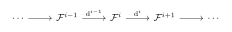
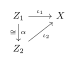
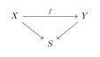
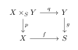
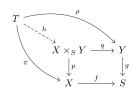
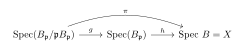
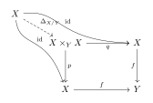
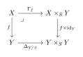

Scheme Theory
General Schemes
General Schemes
Basic Definition of Schemes
We now assemble the pieces to define the central object of algebraic geometry: the scheme. A scheme is a topological space equipped with a sheaf of modules that locally looks like the spectrum of a ring.
Gluing Up
We have already studied the model objects: affine schemes. Since schemes are locally affine, we can construct general schemes by gluing affine schemes together. Instead of treating topological gluing and sheaf gluing separately, we formulate a unified "Gluing Lemma" in the category of locally ringed spaces.
We now assert that these data uniquely determine a global object.
Theorem 2.1 (Gluing of Locally Ringed Spaces). Given a gluing datum (\{X_i\}, \{U_{ij}\}, \{\varphi_{ij}\}) in the category of locally ringed spaces, there exists a locally ringed space (X, \mathcal{O}_X) together with morphisms \psi_i: X_i \to X, satisfying:
\psi_i is an isomorphism from X_i onto an open subspace of X.
The open sets cover X, i.e., X = \bigcup_{i \in I} \psi_i(X_i).
The morphisms are compatible with the gluing maps: \psi_i = \psi_j \circ \varphi_{ij} on U_{ij}.
Furthermore, X satisfies the following Universal Property: For any locally ringed space Y and a family of morphisms \{f_i: X_i \to Y\} such that f_i|_{U_{ij}} = f_j|_{U_{ji}} \circ \varphi_{ij}, there exists a unique morphism f: X \to Y making the diagram commute for all i.
Proof. Step 1: The Topological Space. Let X = \varinjlim_{i\in I}X_i be the colimit. The cocycle conditions ensure \sim is a valid equivalence relation. One verifies that the natural maps \psi_i: X_i \to X are homeomorphisms onto open sets.
Step 2: The Structure Sheaf. We define \mathcal{O}_X using the sheaf gluing property (or simply by definition on the quotient). For any open set V \subseteq X, a section s \in \mathcal{O}_X(V) is a collection of sections \{s_i \in \mathcal{O}_{X_i}(\psi_i^{-1}(V))\} such that for all i,j, the restriction of s_i to overlaps corresponds to s_j via the ring isomorphisms induced by \varphi_{ij}. Since sheaves are defined by local data, this forms a well-defined sheaf of rings.
Step 3: Locally Ringed Property. Since \mathcal{O}_X|_{X_i} \cong \mathcal{O}_{X_i} and each (X_i, \mathcal{O}_{X_i}) is a locally ringed space, the stalks of \mathcal{O}_X are local rings. Thus (X, \mathcal{O}_X) is a locally ringed space. ◻
The universal property mentioned above is essentially the "Gluing Lemma for Morphisms." It can be restated as the sheaf property of the Hom-functor.
Proposition 2.1 (Sheaf Property of Morphisms). Let X and Y be locally ringed spaces (or schemes). Let \{U_i\} be an open cover of X.
If f, g: X \to Y are two morphisms such that f|_{U_i} = g|_{U_i} for all i, then f = g.
If \{f_i: U_i \to Y\} is a collection of morphisms satisfying f_i|_{U_i \cap U_j} = f_j|_{U_i \cap U_j} for all pairs, then there exists a unique morphism f: X \to Y such that f|_{U_i} = f_i.
In categorical terms, the functor h_Y(-) = \operatorname{Hom}_{\mathsf{Sch}}(-, Y) is a sheaf on the Zariski topology of X.
Definition of Scheme
With the machinery of affine schemes and the gluing lemma, we define the general concept efficiently.
Definition 2.1 (Scheme). A scheme is a locally ringed space (X, \mathcal{O}_X) that is locally isomorphic to an affine scheme. That is, there exists an open cover \{U_i\}_{i \in I} of X such that for each i, the locally ringed space (U_i, \mathcal{O}_X|_{U_i}) is isomorphic to (\operatorname{Spec}A_i, \mathcal{O}_{\operatorname{Spec}A_i}) for some ring A_i.
Remark 2.1 (Equivalent Definition of Schemes). By above, a scheme can be equivalently defined as the result of gluing a family of affine schemes \{\operatorname{Spec}A_i\} along open subschemes.
Definition 2.2 (Morphism of Schemes). A morphism of schemes is simply a morphism of locally ringed spaces.
We denote by \mathsf{Sch} the category of schemes. The definition implies a full embedding of the category of affine schemes into \mathsf{Sch}.
Following the definition of a scheme as a locally ringed space locally isomorphic to an affine scheme, here are the most straightforward examples:
Example 2.1 (The Projective Line \mathbb{P}^1_k). Let k be a field. The projective line \mathbb{P}^1_k is obtained by gluing two copies of the affine line \mathbb{A}^1_k. Let U_1 = \operatorname{Spec} k[x] and U_2 = \operatorname{Spec} k[y]. We glue them along the open subschemes: U_{12} = \operatorname{Spec} k[x, x^{-1}] \subset U_1 U_{21} = \operatorname{Spec} k[y, y^{-1}] \subset U_2 via the ring isomorphism k[x, x^{-1}] \cong k[y, y^{-1}] given by mapping x \mapsto y^{-1}. This scheme is not affine; its only globally regular functions are constants, but it is not isomorphic to \operatorname{Spec}(k) which is merely a single point.
Example 2.1 (The Affine Line with a Doubled Origin). This is a classic example of a non-separated scheme. Let U_1 = \operatorname{Spec} k[x] and U_2 = \operatorname{Spec} k[y]. We glue them along the same open subschemes as before: U_{12} = \operatorname{Spec} k[x, x^{-1}] \subset U_1 U_{21} = \operatorname{Spec} k[y, y^{-1}] \subset U_2 However, this time we use the identity isomorphism k[x, x^{-1}] \cong k[y, y^{-1}] given by x \mapsto y. The resulting scheme looks like the affine line, but the origin x=0 has been replaced by two distinct points.
Example 2.1 (The Punctured Affine Plane). Let X = \mathbb{A}^2_k = \operatorname{Spec} k[x,y]. Consider the open subscheme U = X \setminus \{ \mathfrak{m} \}, where \mathfrak{m} = (x,y) is the maximal ideal corresponding to the origin. U can be covered by gluing two affine open sets: U_x = \operatorname{Spec} k[x,y, x^{-1}] U_y = \operatorname{Spec} k[x,y, y^{-1}] The scheme U is not affine. Any regular function on U extends uniquely to a regular function on X. Therefore, the global sections are \Gamma(U, \mathcal{O}_U) = k[x,y]. If U were affine, it would have to be isomorphic to \operatorname{Spec}(\Gamma(U, \mathcal{O}_U)) = \operatorname{Spec} k[x,y] = \mathbb{A}^2_k, which is a contradiction since U is strictly missing a point.
Adjunction in the Category of Locally Ringed Spaces
Furthermore, the global section functor \Gamma: \mathsf{Sch} \to \mathsf{Ring}^{\mathrm{op}} has a right adjoint \operatorname{Spec}: \mathsf{Ring}^{\mathrm{op}} \to \mathsf{Sch}, establishing the fundamental link between algebra and geometry.
We now establish the bridge between the category of rings and the category of locally ringed spaces (and thus schemes). The classical result stating that affine schemes are equivalent to rings is merely a consequence of a much more general adjunction.
Theorem 2.1 (Adjunction between Global Sections and Spectrum). Let \mathsf{LRS} be the category of locally ringed spaces. There is an adjunction between the global section functor \Gamma: \mathsf{LRS} \to \mathsf{Ring}^{\mathrm{op}} and the spectrum functor \operatorname{Spec}: \mathsf{Ring}^{\mathrm{op}} \to \mathsf{LRS}. Explicitly, for any locally ringed space X and any ring A, there is a natural bijection: \Phi: \operatorname{Hom}_{\mathsf{LRS}}(X, \operatorname{Spec} A) \xrightarrow{\sim} \operatorname{Hom}_{\mathsf{Ring}}(A, \Gamma(X, \mathcal{O}_X)).
Proof. We construct the map and its inverse.
Step 1: From Geometry to Algebra (\Phi): Let (f, f^\sharp ): X \to \operatorname{Spec} A be a morphism. The sheaf map f^\sharp : \mathcal{O}_{\operatorname{Spec} A} \to f_*\mathcal{O}_X induces a map on global sections: \Gamma(\operatorname{Spec} A, \mathcal{O}_{\operatorname{Spec} A}) \xrightarrow{f^\sharp (X)} \Gamma(\operatorname{Spec} A, f_*\mathcal{O}_X) = \Gamma(X, \mathcal{O}_X). Since \Gamma(\operatorname{Spec} A, \mathcal{O}_{\operatorname{Spec} A}) \cong A, this gives a ring homomorphism \phi: A \to \Gamma(X, \mathcal{O}_X). Thus, \Phi(f) = \phi.
Step 2: From Algebra to Geometry (\Phi^{-1}): Let \phi: A \to \Gamma(X, \mathcal{O}_X) be a ring homomorphism. We must construct a morphism f: X \to \operatorname{Spec} A.
Step 2a: The Topological Map. For any point x \in X, we have a canonical map from global sections to the residue field \kappa(x): \text{ev}_x: \Gamma(X, \mathcal{O}_X) \longrightarrow \mathcal{O}_{X,x} \longrightarrow \kappa(x). Composing with \phi, we get a map A \to \kappa(x). The kernel of this map is a prime ideal in A (since the target is a field). We define f(x) to be this prime ideal: f(x) := \ker(\text{ev}_x \circ \phi) \in \operatorname{Spec} A. It is a standard verification that this map is continuous (preimage of D(a) is the open set where \phi(a) is invertible).
Step 2b: The Sheaf Map. We need a map f^\sharp : \mathcal{O}_{\operatorname{Spec} A} \to f_*\mathcal{O}_X. Since \mathcal{O}_{\operatorname{Spec} A} is defined on the basis \{D(a)\}_{a \in A}, it suffices to define compatible maps on this basis. On D(a), we have \mathcal{O}_{\operatorname{Spec} A}(D(a)) = A_a. We need a map A_a \to \Gamma(f^{-1}(D(a)), \mathcal{O}_X). Note that f^{-1}(D(a)) = \{x \in X \mid \phi(a) \notin \mathfrak{m}_x\}. This is exactly the locus where the section \phi(a) \in \Gamma(X, \mathcal{O}_X) is invertible in the stalks. Thus \phi(a) is a unit in \Gamma(f^{-1}(D(a)), \mathcal{O}_X). Therefore, the universal property of localization induces a unique map: A_a \longrightarrow \Gamma(f^{-1}(D(a)), \mathcal{O}_X). These maps are compatible with restriction, defining a morphism of sheaves.
Step 2c: The Local Property. We check the stalks. Let x \in X and \mathfrak{p} = f(x). The map on stalks f^\sharp _x: A_{\mathfrak{p}} \to \mathcal{O}_{X,x} is the localization of the composite A \xrightarrow{\phi} \Gamma(X) \to \mathcal{O}_{X,x}. By our definition of f(x), the preimage of \mathfrak{m}_x under this map is exactly \mathfrak{p}. Thus, elements in A \setminus \mathfrak{p} map to units in \mathcal{O}_{X,x}, and the map is a local homomorphism.
The construction in Step 2 provides the inverse to \Phi. ◻
Corollary 2.1 (Equivalence of Affine Schemes and Rings). The functor \operatorname{Spec}: \mathsf{Ring}^{\mathrm{op}} \to \mathsf{Sch} is fully faithful. Its image is the category of affine schemes. Thus: \mathsf{AffSch} \cong \mathsf{Ring}^{\mathrm{op}}.
Proof. Apply the Adjunction Theorem with X = \operatorname{Spec} B. \operatorname{Hom}_{\mathsf{Sch}}(\operatorname{Spec} B, \operatorname{Spec} A) \cong \operatorname{Hom}_{\mathsf{Ring}}(A, \Gamma(\operatorname{Spec} B, \mathcal{O})) \cong \operatorname{Hom}_{\mathsf{Ring}}(A, B). This shows the functor is fully faithful. The essential image is, by definition, the affine schemes. ◻
Adjunction in the Category of Schemes
With the fundamental adjunction \operatorname{Hom}(X, \operatorname{Spec} A) \cong \operatorname{Hom}(A, \Gamma(X)) and the rigorous construction of structure sheaves, the standard structural results for schemes follow immediately.
Proposition 2.1 (Distinguished Open Sets in Affine Schemes are Affine). Let X = \operatorname{Spec} A and let f \in A. The open subspace D(f), equipped with the restricted structure sheaf, is an affine scheme isomorphic to \operatorname{Spec} A_f. \left(D(f), \mathcal{O}_X|_{D(f)}\right) \cong \left(\operatorname{Spec} A_f, \mathcal{O}_{\operatorname{Spec} A_f}\right).
Proof. By our construction of the structure sheaf \mathcal{O}_X on the basis, the restriction of \mathcal{O}_X to the basis element D(f) is precisely the sheaf defined by the ring A_f. Since the topological space D(f) \subset \operatorname{Spec} A is homeomorphic to \operatorname{Spec} A_f, and the sheaves are defined by the same data on the basis, they are isomorphic as locally ringed spaces. ◻
Corollary 2.1 (Open Subschemes). Let X be a scheme and U \subseteq X an open subset. Then (U, \mathcal{O}_X|_U) is a scheme.
Proof. By definition, X has an open covering by affine schemes X = \bigcup U_i where U_i \cong \operatorname{Spec} A_i. Then U = \bigcup (U \cap U_i). The intersection U \cap U_i is an open subset of the affine scheme \operatorname{Spec} A_i. By the basis property, U \cap U_i can be covered by distinguished open sets D(f_{ij}) \subseteq \operatorname{Spec} A_i. By the Proposition above, each D(f_{ij}) is an affine scheme. Thus U is covered by affine schemes, so it is a scheme. ◻
Proposition 2.1 (Morphisms to Affine Schemes). Let X be any scheme (not necessarily affine) and A a ring. There is a canonical bijection: \operatorname{Hom}_{\mathsf{Sch}}(X, \operatorname{Spec} A) \cong \operatorname{Hom}_{\mathsf{Ring}}(A, \Gamma(X, \mathcal{O}_X)).
Proof. This is exactly we proved in the previous section for arbitrary locally ringed spaces. Since schemes are locally ringed spaces, the result holds. ◻
Quasi-coherent and Coherent Sheaves
Definition 2.3 (Quasi-coherent and Coherent Sheaves). Let X be a scheme. A sheaf of \mathcal{O}_X-modules \mathcal{F} is quasi-coherent if there exists an affine open covering X = \bigcup U_i, where U_i = \mathrm{Spec}(A_i), such that for each i, the restriction of \mathcal{F} to U_i is isomorphic to the sheaf associated to some A_i-module M_i:\mathcal{F}|_{U_i} \cong \widetilde{M}_i.
A sheaf of \mathcal{O}_X-modules \mathcal{F} is coherent if:
\mathcal{F} is of finite type, i.e., locally there exists a surjection \mathcal{O}_X^n \to \mathcal{F}.
For any open set U \subseteq X and any morphism \phi: \mathcal{O}_U^n \to \mathcal{F}|_U, the kernel \text{ker}(\phi) is also of finite type.
Definition 2.4 (Complexes of Quasi-coherent and Coherent Sheaves). Let X be a scheme.
A complex of quasi-coherent sheaves (resp.
coherent sheaves) on X
is a chain complex of \mathcal{O}_X-modules

We often consider complexes satisfying additional conditions:
\mathcal{F}^\bullet is bounded above (resp. bounded below, bounded) if \mathcal{F}^i = 0 for all but finitely many i > 0 (resp. i < 0, or both).
A complex of quasi-coherent sheaves \mathcal{F}^\bullet is said to have coherent cohomology if for every i \in \mathbb{Z}, the cohomology sheaf \mathcal{H}^i(\mathcal{F}^\bullet) = \operatorname{ker}(\operatorname{d}^i)/\operatorname{im}(\operatorname{d}^{i-1}) is a coherent \mathcal{O}_X-module.
Open Immersion, Closed Immersion and Immersion
Remark 2.1 (). We need to analyze the relationships between schemes, such as embeddings and immersions, analogous to those in the theory of differentiable manifolds. Unlike the manifold case, however, the immersion of one scheme into another is more nuanced. This is largely because we define sheaves solely on open subsets of the scheme, without corresponding restrictions on closed subsets. Fortunately, commutative algebra provides a clear framework for understanding the ring-theoretic dynamics corresponding to these different types of immersions.
Definition of Immersion
Let \left(X,\mathcal{O}_X\right) and \left(Z,\mathcal{O}_Z\right) be two schemes.
Definition 2.5 (Immersions of Schemes). A morphism f:Z\to X is an open immersion if f is an open embedding of topological spaces, and the induced map of sheaves f^\sharp :\mathcal{O}_X\to f_*\mathcal{O}_Z is an isomorphism.
A morphism of schemes f:Z\to X is a closed immersion if f is a closed embedding of topological spaces, and the induced map of sheaves f^\sharp :\mathcal{O}_X\to f_*\mathcal{O}_Z is surjective. The ideal sheaf \ker\left(f^\sharp \right) is a quasi-coherent sheaf of ideals \mathcal{I} of \mathcal{O}_X.
A morphism of schemes f:Z\to X is an immersion if f can be decompose as Z\to U\to X, where Z\to U is a closed immersion and U\to X is an open immersion.
It is clear that when f:Z\to X is an immersion, the image of Z under f is a locally closed subset of Z. This is equivalent to saying f\left(Z\right) is open in its closure or it is the intersection of an open subset and a closed subset of X.
An important property of all kinds of immersion is they are all "locally", which means we can check them in the covering of X. To ensure this, we can consider the relation of stalks.
Proposition 2.1 (Characterization of Immersions). Let \left(f, f^\sharp \right): \left(Z, \mathcal{O}_Z\right)\to \left(X, \mathcal{O}_X\right) be a morphism.
\left(f, f^\sharp \right) is an open immersion if and only if f induces a homeomorphism of Z with an open subset of X and f^\sharp _{P}: \mathcal{O}_{X, f\left(P\right)} \to \mathcal{O}_{Z, P} is an isomorphism for every P \in Z.
\left(f, f^\sharp \right) is an immersion if and only if f induces a homeomorphism of Z with a locally closed subset of X and f^\sharp _{P}: \mathcal{O}_{X, f\left(P\right)} \to \mathcal{O}_{Z, P} is an epimorphism for every P \in Z.
Immersions are monomorphisms in the category of schemes. Moreover, the composite of immersions ( resp. open immersions, resp. closed immersions) is an immersion ( resp. an open immersion, resp. a closed immersion).
Proof. (i) Open Immersion: The morphism \left(f, f^\sharp \right) is an open immersion if and only if it is an isomorphism onto an open subscheme \left(U, \mathcal{O}_X|_U\right), where U = f\left(Z\right). This definition immediately implies that f is a homeomorphism onto an open subset U \subseteq X. Since isomorphism preserves the local structure, the induced stalk map f^\sharp _{P}: \mathcal{O}_{X, f\left(P\right)} \to \mathcal{O}_{Z, P} must be an isomorphism for every P \in Z.
Conversely, if f is a homeomorphism onto an open set U and f^\sharp _{P} is an isomorphism, the restricted sheaf morphism \mathcal{O}_X|_U \to f_*\mathcal{O}_Z is an isomorphism because isomorphism is equivalent to isomorphism on stalks, thus \left(f, f^\sharp \right) is an open immersion.
(ii) Immersion: An immersion factors as Z \xrightarrow{i} U \xrightarrow{j} X, where j is an open immersion and i is a closed immersion. The necessity is shown by factorization. Topologically, Z is a closed subset of U, which is open in X, making Z locally closed in X, and f is a homeomorphism onto this set. On the stalks, the map f^\sharp _{P} is the composite of j^\sharp ( an isomorphism by (i)) and i^\sharp ( a surjection by the definition of closed immersion), so f^\sharp _P is an epimorphism ( surjection) .
Conversely, assume f is a homeomorphism onto a locally closed set W \subseteq X and f^\sharp _P is an epimorphism. We can write W as a closed subset of some open U \subseteq X. Factoring f as Z \xrightarrow{g} U \xrightarrow{j} X, the stalk map f^\sharp _P = g^\sharp _P \circ j^\sharp _{f\left(P\right)}. Since j^\sharp is an isomorphism and f^\sharp _P is an epimorphism, g^\sharp _P must also be an epimorphism. Since g is a homeomorphism onto a closed subset of U and its stalk maps are epimorphisms, g is a closed immersion. Thus f = j \circ g is an immersion.
(iii) Monomorphisms and Composite: An immersion f: Z \to X is a monomorphism. If f \circ g = f \circ h, the topological injectivity of f guarantees g_{top} = h_{top}.
On the sheaves, the stalk equality g^\sharp _y \circ f^\sharp _{P} = h^\sharp _y \circ f^\sharp _{P} combined with the fact that f^\sharp _P is an epimorphism ( which is right-cancellable in the category of local rings) implies g^\sharp _y = h^\sharp _y, so g=h.
The composite of immersions is an immersion. This is because the composite of two locally closed maps is locally closed, and the composite of two epimorphisms on the stalks is an epimorphism. Specifically, the composite of open immersions is open ( open in open is open, iso \circ iso is iso), and the composite of closed immersions is closed ( closed in closed is closed, sur \circ sur is sur). ◻
Examples about Immersion
Here I state some useful examples about immersion:
Example 2.1 (Closed Immersions).
Closed immersions come from "quotient".
Point Inclusion in the Affine Line:
Let P be the origin in \mathbb{A}^1_k. The inclusion is given by the ring surjection: i: \operatorname{Spec}\left(k\left[x\right]/\left(x\right)\right)\hookrightarrow \operatorname{Spec}\left(k\left[x\right]\right)= \mathbb{A}^1_k. The map on global sections is k\left[x\right]\to k\left[x\right]/\left(x\right)\cong k.
Parabola in the Affine Plane: The parabola defined by y=x^2 is a closed subscheme: i: \operatorname{Spec}\left(k\left[x, y\right]/\left(y-x^2\right)\right)\hookrightarrow \operatorname{Spec}\left(k\left[x, y\right]\right)= \mathbb{A}^2_k.
Non-Reduced Closed Subscheme: A non-reduced closed subscheme (often called a "fat point") where the structure sheaf contains nilpotent elements: i: \operatorname{Spec}\left(k\left[x\right]/\left(x^2\right)\right)\hookrightarrow \operatorname{Spec}\left(k\left[x\right]\right)= \mathbb{A}^1_k. The structure sheaf contains nilpotents represented by x \pmod{x^2}.
Example 2.1 (Open Immersions).
Open immersions come from "localization".
Complement of the Origin in the Affine Line: This corresponds to the localization of the ring: j: \operatorname{Spec}\left(k\left[x,x^{-1}\right]\right)\cong\operatorname{Spec}\left(k\left[x\right]_x\right)\hookrightarrow \operatorname{Spec}\left(k\left[x\right]\right)= \mathbb{A}^1_k. The corresponding topological space is \mathbb{A}^1_k \setminus \left\{0\right\}.
Standard Affine Patch of Projective Space: The inclusion of the standard affine chart into projective n-space: j: \mathbb{A}^n_k \hookrightarrow \mathbb{P}^n_k. This is realized by the open subset D_+\left(x_0\right)= \text{Proj}\left(k\left[x_0, \dots, x_n\right]_{\left(x_0\right)}\right).
General Open Affine Subscheme: For any ring R and element f \in R, the distinguished open set is an open immersion: j: \operatorname{Spec}\left(R_f\right)\hookrightarrow \operatorname{Spec}\left(R\right).
Example 2.1 (Immersions).
A general immersion is a composition of a closed immersion followed by an open immersion ( Z \xrightarrow{\text{closed}} U \xrightarrow{\text{open}} X) . Topologically, it is a homeomorphism onto a locally closed subset.
A Closed Point in the PunctuUniBlue Affine Line: Let P_a be the point corresponding to \left(x-a\right)\in k\left[x\right], where a \neq 0. The map factors through the punctuUniBlue line U = \mathbb{A}^1_k \setminus \left\{0\right\}: f: \operatorname{Spec}\left(k\left[x\right]/\left(x-a\right)\right)\xrightarrow{\text{closed}} U \xrightarrow{\text{open}} \mathbb{A}^1_k.
PunctuUniBlue Parabola in the Affine Plane: Let C \hookrightarrow \mathbb{A}^2_k be a closed immersion of the parabola defined by the ideal (y - x^2) \subset k[x, y], and let P_0 be the origin (0,0). The map f : C \setminus \{P_0\} \to \mathbb{A}^2_k is an immersion: f : C \setminus \{P_0\} \xrightarrow{\text{open}} C \xrightarrow{\text{closed}} \mathbb{A}^2_k C \setminus \{P_0\} is an open subscheme of the closed subscheme C, hence it is a locally closed subscheme of \mathbb{A}^2_k.
Remark 2.1 (Closed Immersions into Affine Schemes). We find the definition of a closed immersion, compaUniBlue to that of an open immersion, is not intuitive. However, the examples provided exhibit strong regularity, namely that they are almost all induced by quotient homomorphisms. This leads us to hypothesize whether any closed immersion into an affine scheme is necessarily of this form.
Closed Immersion into Affine Scheme
Proposition 2.1 (Closed Immersions into Affine Schemes). Notations as above, we have:
The morphism of schemes \phi:\operatorname{Spec}A/\mathfrak{a}\to\operatorname{Spec}A induced by the quotient homomorphism is a closed immersion.
Any closed immersion into an affine scheme is isomorphic to the above way.
Proof. (1) Let \phi: A \to A/\mathfrak{a} be the quotient homomorphism. It induces a morphism of affine schemes f: \operatorname{Spec}(A/\mathfrak{a}) \to \operatorname{Spec}(A), where a prime ideal P \in \operatorname{Spec}(A/\mathfrak{a}) is mapped to f(P) = \phi^{-1}(P) \in \operatorname{Spec}(A).
1. Topological Properties: The image of f is given by: f(\operatorname{Spec}(A/\mathfrak{a})) = \{ \mathfrak{p} \in \operatorname{Spec}(A) \mid \mathfrak{p} \supseteq \ker(\phi) = \mathfrak{a} \} = V(\mathfrak{a}) For any closed subset V(\bar{\mathfrak{b}}) \subseteq \operatorname{Spec}(A/\mathfrak{a}) (where \bar{\mathfrak{b}} is an ideal in A/\mathfrak{a}), let \mathfrak{b} = \phi^{-1}(\bar{\mathfrak{b}}). Its image is: f(V(\bar{\mathfrak{b}})) = \{ \mathfrak{p} \in \operatorname{Spec}(A) \mid \mathfrak{p} \supseteq \mathfrak{b} \} = V(\mathfrak{b}) This is a closed set in \operatorname{Spec}(A). Since f is continuous and provides a bijection between prime ideals of A/\mathfrak{a} and prime ideals of A containing \mathfrak{a}, f is a homeomorphism from \operatorname{Spec}(A/\mathfrak{a}) onto the closed subset V(\mathfrak{a}) \subseteq \operatorname{Spec}(A).
2. Sheaf Condition: To show f is a closed immersion, we must check that the map of structure sheaves f^\sharp : \mathcal{O}_{\operatorname{Spec} A} \to f_*\mathcal{O}_{\operatorname{Spec}(A/\mathfrak{a})} is surjective. It suffices to check this on the stalks. For any point P \in \operatorname{Spec}(A/\mathfrak{a}) and \mathfrak{p} = f(P), the stalk map is: f^\sharp _{P}: \mathcal{O}_{\operatorname{Spec} A, \mathfrak{p}} \to \mathcal{O}_{\operatorname{Spec}(A/\mathfrak{a}), P} which corresponds to the map of local rings: A_{\mathfrak{p}} \to (A/\mathfrak{a})_{P} \cong (A/\mathfrak{a})_{\mathfrak{p}/\mathfrak{a}} Since the sequence A \xrightarrow{\phi} A/\mathfrak{a} \to 0 is exact, and localization is an exact functor, the localized sequence: A_{\mathfrak{p}} \to (A/\mathfrak{a})_{\mathfrak{p}/\mathfrak{a}} \to 0 is also exact. This implies that the stalk map f^\sharp _{P} is surjective for all P.
Therefore, f is a closed immersion.
(2) Let f: Z \to \operatorname{Spec}A be a closed immersion. The proof proceeds in two stages: first establishing that Z is affine, and then constructing the algebraic isomorphism.
Step 1: The scheme Z is affine. Since f is a closed immersion, it is in particular a homeomorphism onto a closed subset of \operatorname{Spec}A. We identify the underlying topological space of Z with its image in \operatorname{Spec}A. Recall the criterion for affineness: a scheme S is affine if there exist elements g_1, \dots, g_n \in \Gamma(S, \mathcal{O}_S) generating the unit ideal such that each open subset S_{g_i} (where g_i does not vanish) is affine.
For any point P \in Z, let U_P \subset \operatorname{Spec}A be an affine open neighborhood such that f^{-1}(U_P) is affine (this exists by the definition of a scheme/closed immersion). We can shrink U_P to a distinguished open set D(h_P) \subseteq U_P for some h_P \in A. The intersection Z \cap D(h_P) is an open subscheme of the affine scheme f^{-1}(U_P), and thus is affine.
Since \operatorname{Spec}A is quasi-compact, we can cover Z (viewed as a closed subset) by finitely many such distinguished open sets \{D(h_i)\}_{i=1}^m. Note that we can extend this to a cover of the entire space \operatorname{Spec}A by adding open sets in the complement of Z, but the focus is on Z. Let \bar{h}_i denote the image of h_i under the map f^\sharp : A \to \Gamma(Z, \mathcal{O}_Z). Since the D(h_i) cover Z, the germs of \bar{h}_i generate the structure sheaf everywhere, which implies that \bar{h}_1, \dots, \bar{h}_m generate the unit ideal in the global section ring \Gamma(Z, \mathcal{O}_Z). Furthermore, the open sets Z_{\bar{h}_i} = f^{-1}(D(h_i)) are precisely the affine schemes identified above. By the affineness criterion, Z is an affine scheme.
Step 2: Isomorphism with a quotient. Since Z is affine, let Z \cong \operatorname{Spec}B. The morphism f: \operatorname{Spec}B \to \operatorname{Spec}A corresponds to a ring homomorphism \phi: A \to B. Let \mathfrak{a} = \ker \phi. By the First Isomorphism Theorem, the map \phi factors as: A \xrightarrow{\pi} A/\mathfrak{a} \xrightarrow{\bar{\phi}} B, where \pi is the canonical projection and \bar{\phi} is an injective ring homomorphism. This algebraic factorization induces a factorization of schemes: \operatorname{Spec}B \xrightarrow{\theta} \operatorname{Spec}(A/\mathfrak{a}) \xrightarrow{g} \operatorname{Spec}A. Here, g is the closed immersion corresponding to the surjection A \to A/\mathfrak{a} (as proven in part (i)). Since the composition f = g \circ \theta is a closed immersion by hypothesis, and g is a closed immersion, we claim \theta must be an isomorphism.
Geometrically, the image of \phi in B is isomorphic to A/\mathfrak{a}. Since f is a closed immersion, the map of sheaves f^\sharp : \mathcal{O}_{\operatorname{Spec}A} \to f_* \mathcal{O}_{\operatorname{Spec}B} is surjective. This implies that the induced map on global sections \phi: A \to B is surjective. Consequently, the injective map \bar{\phi}: A/\mathfrak{a} \to B is also surjective, hence a ring isomorphism.
Alternatively, using the argument from the reference without assuming global surjectivity immediately: The map \theta corresponds to the injection \bar{\phi}: A/\mathfrak{a} \hookrightarrow B. For any h \in A/\mathfrak{a}, the map on localizations (A/\mathfrak{a})_h \to B_{\bar{\phi}(h)} is injective. Thus, the morphism of sheaves \theta^\sharp : \mathcal{O}_{\operatorname{Spec}(A/\mathfrak{a})} \to \theta_* \mathcal{O}_{\operatorname{Spec}B} is injective. However, since f is a closed immersion, f(Z) is homeomorphic to V(\mathfrak{a}), which is the underlying space of \operatorname{Spec}(A/\mathfrak{a}). Thus \theta is a homeomorphism. Since it is a closed immersion (as a map between affines induced by a homomorphism), \theta^\sharp is surjective. Being both injective and surjective, \theta^\sharp is an isomorphism. Thus, Z \cong \operatorname{Spec}(A/\mathfrak{a}). ◻
Reduced Induced Closed Subscheme
Remark 2.1 (Closed Subschemes). We wish to define the concept of a closed subscheme on a scheme X. This concept is not as straightforward as that of an open subscheme, which can be realized directly through a topological embedding and the restriction of the sheaf. Since we lack a direct definition for the structure sheaf restricted to a closed set, we are forced to define this concept via the notion of a closed immersion.
A closed subscheme of X is
defined as an equivalence class of closed immersions \iota: Z \to X. Two closed immersions
\iota_1: Z_1 \to X and \iota_2: Z_2 \to X are said to be
isomorphic (i.e., they define the same closed subscheme) if there
exists an isomorphism \alpha: Z_1
\xrightarrow{\cong} Z_2 such that the following diagram
commutes:

This confirms that a closed subscheme is precisely the isomorphism class of closed immersions into X.
Among these isomorphism classes, we often wish to select the most canonical or simplest representative. Specifically, we aim to choose a representative Z that is a reduced scheme, which we then call the induced reduced closed subscheme.
Proposition 2.1 (Reduced Induced Closed Subscheme). For any closed subset Y of a scheme X there is a unique reduced closed subscheme \left(Y,\mathcal{O}_Y\right) of X whose topological space is Y, such that for any closed immersion \left(Z,\mathcal{O}_Z\right)\to\left(X,\mathcal{O}_X\right) where the image of Z in X containing Y, there’s a unique morphism of schemes \left(Y,\mathcal{O}_Y\right)\to\left(Z,\mathcal{O}_Z\right), satisfies \left(\left(Y,\mathcal{O}_Y\right)\to\left(X,\mathcal{O}_X\right)\right)=\left(\left(Y,\mathcal{O}_Y\right)\to\left(Z,\mathcal{O}_Z\right)\right)\circ\left(\left(Z,\mathcal{O}_Z\right)\to\left(X,\mathcal{O}_X\right)\right). We call this subscheme reduced induced closed subscheme.
Proof. The proof proceeds by first establishing the result for affine schemes using commutative algebra, and then gluing the local results to cover the general case.
Step 1: The Affine Case. Suppose X = \operatorname{Spec}A is an affine scheme. Let Y \subseteq X be a closed subset. Ideally, Y corresponds to a radical ideal \mathfrak{a} \subseteq A such that Y = V(\mathfrak{a}) and \mathfrak{a} = \sqrt{\mathfrak{a}}. We define the reduced induced subscheme as (Y, \mathcal{O}_Y) := \operatorname{Spec}(A/\mathfrak{a}). Since A/\mathfrak{a} is a reduced ring (has no non-zero nilpotents), this scheme is reduced. The canonical projection \pi: A \to A/\mathfrak{a} induces a closed immersion \operatorname{Spec}(A/\mathfrak{a}) \to \operatorname{Spec}A with image V(\mathfrak{a}) = Y.
Proof of Universal Property (Affine): Let f: Z \to X be any closed immersion such that f(Z) \supseteq Y. Since X is affine, by Proposition , Z is affine and isomorphic to \operatorname{Spec}(A/\mathfrak{b}) for some ideal \mathfrak{b} \subseteq A. The closed immersion f corresponds to the projection A \to A/\mathfrak{b}. The condition f(Z) \supseteq Y translates algebraically to V(\mathfrak{b}) \supseteq V(\mathfrak{a}). By the properties of Zariski topology, this inclusion implies: \sqrt{\mathfrak{b}} \subseteq \sqrt{\mathfrak{a}}. Since we constructed \mathcal{O}_Y using the radical ideal \mathfrak{a} = \sqrt{\mathfrak{a}}, we have the chain of inclusions: \mathfrak{b} \subseteq \sqrt{\mathfrak{b}} \subseteq \sqrt{\mathfrak{a}} = \mathfrak{a}. The inclusion \mathfrak{b} \subseteq \mathfrak{a} guarantees the existence and uniqueness of a ring homomorphism A/\mathfrak{b} \to A/\mathfrak{a} making the diagram of rings commute (factoring the projection A \to A/\mathfrak{a}). Taking spectra, this yields a unique morphism of schemes g: \operatorname{Spec}(A/\mathfrak{a}) \to \operatorname{Spec}(A/\mathfrak{b}) satisfying the commutative diagram in the proposition.
Step 2: Uniqueness of the Morphism (Global Gluing). Now let X be an arbitrary scheme. Suppose the reduced induced subscheme (Y, \mathcal{O}_Y) exists. We show the morphism g in the universal property is unique. Cover X by affine open subsets \{U_i\}_{i \in I}. Let Y_i = Y \cap U_i and Z_i = f^{-1}(U_i). The restriction of the problem to each U_i gives a diagram of schemes over the affine U_i. By the affine case proven in Step 1, for each i, there exists a unique morphism g_i: Y_i \to Z_i making the local diagram commute. On the intersection U_i \cap U_j, the uniqueness implies that g_i|_{Y \cap U_i \cap U_j} = g_j|_{Y \cap U_i \cap U_j}. Thus, by the sheaf property of morphisms, these local morphisms \{g_i\} glue to a unique global morphism g: Y \to Z.
Step 3: Existence of the Scheme (Global Construction). We construct (Y, \mathcal{O}_Y) by gluing. Cover X by affine open sets U_i = \operatorname{Spec}A_i. For each i, let Y_i = Y \cap U_i. Let \mathfrak{a}_i \subseteq A_i be the ideal defining Y_i (specifically, \mathfrak{a}_i = \bigcap_{\mathfrak{p} \in Y_i} \mathfrak{p}). We define the local scheme (Y_i, \mathcal{O}_{Y_i}) := \operatorname{Spec}(A_i/\mathfrak{a}_i).
To glue these into a global scheme, consider the intersection U_i \cap U_j. Note that U_i \cap U_j is open in U_i, so it can be covered by basic open affine sets U_{ijk} \subseteq U_i \cap U_j. The induced structure on Y \cap U_{ijk} coming from Y_i is simply the localization of A_i/\mathfrak{a}_i, which is naturally isomorphic to the induced structure coming from Y_j (since both are the unique reduced structures on the same affine set). Therefore, we have canonical isomorphisms \theta_{ij}: (Y_i, \mathcal{O}_{Y_i})|_{U_i \cap U_j} \xrightarrow{\sim} (Y_j, \mathcal{O}_{Y_j})|_{U_i \cap U_j} satisfying the cocycle condition. We glue these affine schemes (Y_i, \mathcal{O}_{Y_i}) along these isomorphisms to obtain a global scheme (Y, \mathcal{O}_Y). Since being reduced is a local property, and each affine piece is reduced, the global scheme is reduced. The inclusion morphisms Y_i \hookrightarrow U_i glue to a global closed immersion Y \hookrightarrow X.
This constructs the requiUniBlue scheme, and Step 2 guarantees it satisfies the universal property. ◻
When X is an affine scheme \operatorname{Spec}A, we know that any closed immersion is isomorphic with \operatorname{Spec}A/\mathfrak{a}\to\operatorname{Spec}A, and Y=V\left(\mathfrak{a}\right). Since \left(Y,\mathcal{O}_Y\right) is reduced, the ideal \mathfrak{a} must satisfies that \sqrt{\mathfrak{a}}=\mathfrak{a}. Such kind of the ideal \mathfrak{a} is uniquely determined by Y=V\left(\mathfrak{a}\right).
Scheme-Theoretic Image and Scheme-Theoretic Closure
Following our discussion of closed subschemes and how they are classified by closed immersions, it is natural to ask: given a morphism of schemes, what is its “image”? In the category of schemes, we define this via a universal property, seeking the smallest closed subscheme through which the morphism factors.
Definition 2.6 (Scheme-Theoretic Image). Let f \colon X \to Y be a morphism of schemes. The scheme-theoretic image of f is a closed subscheme Z of Y with closed immersion \iota \colon Z \hookrightarrow Y satisfying the following conditions:
The morphism f factors through Z. That is, there exists a morphism of schemes g \colon X \to Z such that f = \iota \circ g.
(Universal Property) For any other closed subscheme Z' of Y with immersion \iota' \colon Z' \hookrightarrow Y such that f factors through Z', the closed subscheme Z is contained in Z'. Meaning, the immersion \iota factors through \iota'.
When such a subscheme exists, it is unique up to unique isomorphism by its universal property, and we denote it by \operatorname{im}(f).
Remark 2.1 (The Affine Case). To make this concrete, consider the affine case. Let f \colon \operatorname{Spec} B \to \operatorname{Spec} A be a morphism of affine schemes induced by a ring homomorphism \varphi \colon A \to B. A closed subscheme of \operatorname{Spec} A corresponds to an ideal I \subset A, and f factors through \operatorname{Spec}(A/I) if and only if I \subset \ker(\varphi).
The “smallest” such closed subscheme corresponds to the “largest” such ideal. Therefore, the scheme-theoretic image of f is exactly \operatorname{Spec}(A/\ker(\varphi)).
Definition 2.7 (Scheme-Theoretic Closure). Let X be a scheme and U \subset X be a subscheme (most frequently, an open subscheme), with j \colon U \hookrightarrow X denoting the canonical immersion. The scheme-theoretic closure of U in X is defined to be the scheme-theoretic image of the immersion j.
Remark 2.1. It is important to distinguish the scheme-theoretic closure from the standard topological closure. While the underlying topological space of the scheme-theoretic closure of U is indeed the topological closure \overline{U}, the scheme-theoretic version equips this space with a specific structure sheaf.
If X is a reduced scheme and U is an open subscheme, the scheme-theoretic closure of U coincides with the reduced induced closed subscheme structure on the topological closure \overline{U}.
In the context of a general morphism f \colon X \to Y, the scheme-theoretic image is the natural generalization of a closure. However, while it is tempting to think that the scheme-theoretic image simply endows the topological closure of the image with a suitable reduced structure, this is false in general. The topological space of the scheme-theoretic image can be strictly larger.
Proposition 2.1 (Topological Containment). Let f \colon X \to Y be a morphism of schemes, and let Z be its scheme-theoretic image. Let f(|X|) denote the set-theoretic image of the underlying topological spaces, and \overline{f(|X|)} its topological closure in Y. We always have the containment: \overline{f(|X|)} \subseteq |Z|
Proof. By the definition of the scheme-theoretic image, Z is a closed subscheme of Y via a closed immersion i \colon Z \hookrightarrow Y, and f factors as f = i \circ g for some morphism g \colon X \to Z.
At the level of underlying topological spaces, this factorization implies: f(|X|) = i(g(|X|)) \subseteq i(|Z|) = |Z| Since i \colon Z \hookrightarrow Y is a closed immersion, |Z| is a closed subset of Y. Because |Z| is a closed set containing f(|X|), it must also contain the topological closure of f(|X|) in Y. Consequently: \overline{f(|X|)} \subseteq |Z| ◻
Example 2.1 (A Scheme-Theoretic Image Strictly Larger than the Topological Closure). We construct a morphism f \colon X \to Y where |Z| \neq \overline{f(|X|)}. This occurs when the morphism exhibits non-quasi-compact behavior.
Let k be a field. Let our target scheme be the affine line Y = \operatorname{Spec} k[x]. For our source scheme, we take an infinite disjoint union of infinitesimal neighborhoods of the origin. For each integer n \ge 1, let X_n = \operatorname{Spec}(k[x]/(x^n)). We define X as their disjoint union: X = \coprod_{n=1}^\infty X_n = \coprod_{n=1}^\infty \operatorname{Spec}(k[x]/(x^n)) The canonical quotient maps k[x] \to k[x]/(x^n) induce morphisms f_n \colon X_n \to Y. By the universal property of the disjoint union, these glue to a single global morphism f \colon X \to Y.
Topologically, each X_n consists of a single point, which maps to the origin (x) \in \operatorname{Spec} k[x]. Therefore, the set-theoretic image is just the origin: f(|X|) = \{ (x) \} Since a single point is closed in the Zariski topology of \mathbb{A}^1_k, the topological closure of the image is just the origin itself: \overline{f(|X|)} = \{ (x) \}
Now we determine the scheme-theoretic image Z. Since Y is affine, any closed subscheme corresponds to an ideal I \subset k[x], so Z = \operatorname{Spec}(k[x]/I). The condition that f factors through Z means that the ring homomorphism k[x] \to \prod_{n=1}^\infty k[x]/(x^n) factors through k[x]/I. Thus, I must be contained in the kernel of this map: \ker\left( k[x] \to \prod_{n=1}^\infty k[x]/(x^n) \right) = \bigcap_{n=1}^\infty (x^n) = \{ 0 \} The largest ideal contained in \{0\} is simply (0). Therefore, the scheme-theoretic image is Z = \operatorname{Spec}(k[x]/(0)) = Y = \mathbb{A}^1_k.
The underlying topological space of Z is the entire affine line, which is strictly larger than the topological closure \{ (x) \}.
Fiber Product and Base Change
Remark 2.1 (Fiber Product and Base Change). Next, we will introduce the extremely important concepts in algebraic geometry, namely the fiber product and base change; in fact, these two concepts are fundamentally equivalent.To do this, we need some preparation.
First, we have become familiar with the category of schemes (\mathsf{Sch}) and the category of affine schemes (\mathsf{AffSch}). We will construct a related class of categories, specifically the category of S-schemes (\mathsf{Sch}/S). The fiber product is then realized as the product object (or more accurately, the pullback/fiber product) within this category \mathsf{Sch}/S.
Definition 2.8 (the Category of S-schemes). The category of S-schemes, denoted \mathsf{Sch}/S, is defined as follows:
Objects \text{Ob}(\mathsf{Sch}/S): An object X is a scheme X together with a structural morphism X \to S.
Morphisms \text{Mor}(\mathsf{Sch}/S): A morphism f: X \to Y is a scheme morphism such that the following diagram commutes:

Composition: Composition f \circ g is defined as usual in the category of schemes.
Remark 2.1 (\operatorname{Sch}/S is a Comma Category). From a strictly categorical perspective, the category of S-schemes \operatorname{Sch}/S is precisely the slice category (which is a specific formulation of a comma category) over the object S. It is often denoted in general category theory as (\operatorname{Sch} \downarrow S).
Remark 2.1 (Absolute Schemes as \mathbb{Z}-Schemes). The ring of integers \mathbb{Z} is the initial object in the category of commutative rings. Consequently, its spectrum \operatorname{Spec} \mathbb{Z} is the terminal object in the category of schemes. Because there is a unique morphism from any scheme X to \operatorname{Spec} \mathbb{Z}, the category of all schemes is isomorphic to the category of schemes over \operatorname{Spec} \mathbb{Z}. We conventionally write this as: \operatorname{Sch} = \operatorname{Sch}/\operatorname{Spec} \mathbb{Z} which is frequently abbreviated in literature simply as \operatorname{Sch} = \operatorname{Sch}/\mathbb{Z}. In other words, every scheme is canonically a \mathbb{Z}-scheme.
Remark 2.1 (Affine S-Schemes and Algebras). Let R be a commutative ring and let our base scheme be affine, S = \operatorname{Spec} R. Let \operatorname{AffSch}/R denote the full subcategory of \operatorname{Sch}/S consisting of affine schemes over S.
Taking the global sections yields an equivalence between the category of affine schemes over \operatorname{Spec} R and the opposite category of commutative R-algebras (denoted \operatorname{Alg}_R). We summarize this fundamental anti-equivalence as: (\operatorname{AffSch}/R)^{\text{op}} \simeq \operatorname{Alg}_R An affine scheme with a structural morphism to \operatorname{Spec} R is exactly dual to a commutative ring equipped with a ring homomorphism from R.
Definition of Fiber Product
Definition 2.9 (Fiber Product and Base Change). The fiber product is the product of two S-schemes X and Y in the category \mathsf{Sch}/S. It is the unique scheme X \times_S Y such that the square commutes, satisfying the following universal property:
The scheme X \times_S Y
together with the projection S-morphisms p: X \times_S Y \to X and q: X \times_S Y \to Y makes the
following square commutative:

Moreover, for any S-scheme T and any S-morphisms \pi: T \to X and \rho: T \to Y, there exists a unique
S-morphism h: T \to X \times_S Y such that the
larger diagram commutes:

We also say that the S-morphism q is the base change of f along with g, and p is the base change of g along with f
We need to guarantee the existence and uniqueness of the fiber product:
The Uniqueness
The uniqueness of the fibre product (up to unique isomorphism) is an immediate consequence of the universal property of the fiber product in category theory.
Base Case: Affine Schemes (The Foundation)
If all three schemes are affine, X=\operatorname{Spec} A, Y=\operatorname{Spec} B, S=\operatorname{Spec} C, the fibre product exists and is defined algebraically by the tensor product over the base ring: X \times_S Y = \operatorname{Spec}(A \otimes_C B).
Locality Check
The fibre product commutes with taking open subschemes: p^{-1}(U) is the fibre product of U and Y over S.
Gluing Principle (Step 3)
If a scheme X can be covered by open subschemes U_i such that all local products U_i \times_S Y exist, then the global product X \times_S Y exists. This is achieved by checking that the local products are consistent on the overlaps (U_i \cap U_j) \times_S Y and then applying the scheme gluing theorem.
Affine Base, One Affine Factor (S=\text{Affine}, Y=\text{Affine})
We combine the affine base case (Step 1) with the gluing principle (Step 3). By covering X with affine open subschemes and applying Step 1 and Step 3, we show the product exists when S and Y are affine.
Affine Base, Arbitrary Factors (S=\text{Affine})
The fibre product is symmetric. By exchanging X and Y and applying Step 4 and Step 3 again, the product exists for any arbitrary schemes X and Y over an affine base S.
General Case (Arbitrary Base S)
The final step is to cover the base scheme S with affine open subschemes S_i. This reduces the problem to a family of problems over affine bases S_i (Step 5). The final global product X \times_S Y is obtained by gluing these local products X_i \times_{S_i} Y_i together using the gluing principle (Step 3).
Properties of Fiber Product
There are some useful properties of fiber product:
Proposition 2.1 (Properties of Fiber Product). Let S be a scheme. For any S-schemes X, Y, Z and any S-scheme S', the following natural isomorphisms hold:
Symmetry (Commutativity): The order of the factors does not matter. \begin{align} X \times_S Y & \cong Y \times_S X \end{align}
Associativity: The grouping of factors does not matter for multiple fiber products over the same base S. \begin{align} (X \times_S Y) \times_S Z & \cong X \times_S (Y \times_S Z) \end{align}
Identity Base Change: The fiber product with the base scheme itself, where the map is the identity, is the scheme itself. \begin{align} X \times_S S & \cong X \end{align}
Identity Fiber Product: If the structure morphism X \to S is the identity \text{id}_X, the product is X. \begin{align} X \times_X X & \cong X \end{align}
Locality (Commutativity of Fiber Product and Base Change):
If S' is a scheme over S (via a structure morphism h: S' \to S), the operation of taking the fiber product X \times_S Y and then pulling it back to the new base S' (i.e., base changing) is the same as first pulling back X and Y separately to S', and then taking their fiber product over S': \begin{align} (X \times_S Y) \times_S S' & \cong (X \times_S S') \times_{S'} (Y \times_S S') \end{align}
This property is also crucial in the existence proof of the general fiber product.
As for the proof, they are just the following commutative graph:
Fiber
Remark 2.1 (Fiber as a Fiber Product). One of the most crucial roles of the fiber product (\times_Y) in scheme theory is to represent the fiber of a scheme morphism.
Given a morphism of schemes f: X \to Y, we are interested in the preimage of a specific point y in the target space Y, i.e., the set of points f^{-1}(y). In topology, one can indeed obtain these points by simply taking the preimage in the topological space, f_{\text{top}}^{-1}(y). However, this purely point-set operation fails to inherit the sheaf structure, preventing us from obtaining an object with a proper scheme structure.
To construct a geometric object that correctly preserves the scheme structure (i.e., the scheme corresponding to f^{-1}(y)), we take the fiber product of the source scheme X with the spectrum of the residue field \text{Spec } k(y) associated with the point y:
X_y := X \times_Y \text{Spec } k(y).
Through this construction, it can be proven that the underlying topological space \lvert X_y \rvert of the resulting fiber scheme is homeomorphic to the preimage f_{\text{top}}^{-1}(y) in the topological sense. Thus, the fiber product not only yields the correct set of points but also endows them with a natural local ring and algebraic structure.
Proposition 2.1 (Fiber as a Fiber Product). Let f: X \to Y be a morphism of schemes, y a point in Y, and k(y) the residue field of \mathcal{O}_{Y,y}. The projection X \times_Y \text{Spec } k(y) \to X induces a homeomorphism onto the underlying topological space of f^{-1}(y).
Proof. The problem is local on Y and X. We may assume that Y = \text{Spec } A and X = \text{Spec } B are affine, and f is induced by a ring homomorphism \phi: A \to B. The point y \in Y corresponds to a prime ideal \mathfrak{p} \subset A.
Part 1: The Algebraic Structure of the Fiber
The fiber X \times_Y \text{Spec } k(y) corresponds to the ring R = B \otimes_A k(y). The residue field k(y) is defined as the quotient of the local ring \mathcal{O}_{Y,y} \cong A_{\mathfrak{p}} by its maximal ideal \mathfrak{p}A_{\mathfrak{p}}: k(y) = A_{\mathfrak{p}} / \mathfrak{p}A_{\mathfrak{p}}. Substituting this into the definition of R: R \cong B \otimes_A (A_{\mathfrak{p}} / \mathfrak{p}A_{\mathfrak{p}}). Since A_{\mathfrak{p}} / \mathfrak{p}A_{\mathfrak{p}} \cong (A \otimes_A A_{\mathfrak{p}}) / (\mathfrak{p} \otimes_A A_{\mathfrak{p}}), we apply the property that tensoring commutes with quotienting: R \cong (B \otimes_A A_{\mathfrak{p}}) / (\mathfrak{p}A_{\mathfrak{p}} \otimes_A B). We use the standard notation B_{\mathfrak{p}} = B \otimes_A A_{\mathfrak{p}} (the localization of B with respect to \phi(A \setminus \mathfrak{p})) and recognize the ideal in the denominator as \mathfrak{p}B_{\mathfrak{p}}. R \cong B_{\mathfrak{p}} / \mathfrak{p}B_{\mathfrak{p}}. Thus, the fiber is: X \times_Y \text{Spec } k(y) \cong \operatorname{Spec}(B_{\mathfrak{p}} / \mathfrak{p}B_{\mathfrak{p}}).
Part 2: Homeomorphism on Topological Spaces (Point Correspondence)
We establish a bijection between the points of \lvert X \times_Y \text{Spec } k(y) \rvert and f^{-1}(y). A prime ideal \mathfrak{q}' of R = B_{\mathfrak{p}} / \mathfrak{p}B_{\mathfrak{p}} corresponds to a prime ideal \mathfrak{q}_{\text{loc}} \subset B_{\mathfrak{p}} such that \mathfrak{q}_{\text{loc}} \supseteq \mathfrak{p}B_{\mathfrak{p}}.
The points of B_{\mathfrak{p}} correspond to prime ideals \mathfrak{q} \subset B that are disjoint from the image of the localization set, \phi(A \setminus \mathfrak{p}). \mathfrak{q} \cap \phi(A \setminus \mathfrak{p}) = \emptyset \quad \iff \quad \phi^{-1}(\mathfrak{q}) \subseteq \mathfrak{p}.
The containment condition \mathfrak{q}_{\text{loc}} \supseteq \mathfrak{p}B_{\mathfrak{p}} translates to: \mathfrak{q} \supseteq \phi(\mathfrak{p}). Taking the preimage under \phi: \phi^{-1}(\mathfrak{q}) \supseteq \phi^{-1}(\phi(\mathfrak{p})) \supseteq \mathfrak{p}.
Combining the two conditions (\phi^{-1}(\mathfrak{q}) \subseteq \mathfrak{p} and \phi^{-1}(\mathfrak{q}) \supseteq \mathfrak{p}), we conclude:
\phi^{-1}(\mathfrak{q}) = \mathfrak{p}.
This is precisely the algebraic condition for the geometric statement f(\mathfrak{q}) = y, which means \mathfrak{q} \in f^{-1}(y). Thus, the topological spaces are in bijection.
Part 3: Factorization as an Embedding
The projection \pi: X \times_Y
\text{Spec } k(y) \to X is induced by the composite
homomorphism B \to B_{\mathfrak{p}} \to
B_{\mathfrak{p}} / \mathfrak{p}B_{\mathfrak{p}}. The
projection factors as:

h: Open Immersion.textbf The map h is induced by the localization map B \to B_{\mathfrak{p}}. The image of h is the principal open subset D(\phi(A \setminus \mathfrak{p})), hence h is an open immersion.
g: Closed Immersion.textbf The map g is induced by the surjective map B_{\mathfrak{p}} \to B_{\mathfrak{p}}/\mathfrak{p}B_{\mathfrak{p}}. By definition, this makes g a closed immersion.
Since a closed immersion followed by an open immersion is a local closed immersion (an embedding on the underlying topological space), the map \pi induces a homeomorphism onto its image, which is f^{-1}(y). ◻
Diagonal Morphism and Graph Morphism
Two other crucial concepts derived from the fiber product are the diagonal morphism and the graph morphism. These two morphisms are simply defined by the pairs of universal arrows, (\text{id}, \text{id}) and (\text{id}, f), respectively, and they are defined by the requirement that the following diagrams commute. These constructions are fundamental in defining properties of schemes, such as separatedness (via the diagonal morphism).
Definition 2.10 (Diagonal Morphism). Let
X be an S-scheme, with structure morphism p: X \to S. The diagonal
morphism \Delta_X: X \to X
\times_S X is the unique morphism induced by the pair of
identity maps (\text{id}_X,
\text{id}_X). It makes the following diagram commute:

Definition 2.11 (Graph Morphism). Let f: X \to Y be a morphism of S-schemes. The graph morphism \Gamma_f: X \to X \times_S Y is the unique morphism induced by the pair (\text{id}_X, f). It makes the following diagram commute: Here, \pi_1 and \pi_2 are the projection maps of the fiber product, and q is the structure morphism Y \to S.
Proposition 2.1 (Categorical Relationships). The morphisms f, \Delta_{Y/S}, and \Gamma_f relate to each other in the following fundamental ways:
The Diagonal as a Graph: The diagonal morphism of a scheme X over S is precisely the graph of the identity morphism on X. That is, \Delta_{X/S} = \Gamma_{\operatorname{id}_X}
Recovering the Morphism: The original morphism f can be recovered by composing the graph morphism with the second projection map p_2 \colon X \times_S Y \to Y. That is, f = p_2 \circ \Gamma_f
The Graph as a Base Change: The graph morphism \Gamma_f is naturally obtained by base changing the diagonal \Delta_{Y/S} along the morphism f \times \operatorname{id}_Y \colon X \times_S Y \to Y \times_S Y. Equivalently, the following commutative square is Cartesian:

Proof. According to Proposition . ◻
Remark 2.1 (Topological Consequence). The base change relationship described in part (3) is incredibly powerful. In scheme theory, many properties of morphisms (such as being a closed immersion, being finite, or being surjective) are preserved under base change.
For instance, if we know that the diagonal \Delta_{Y/S} is a closed immersion (which is the very definition of Y being separated over S), it immediately follows from the pullback square that the graph \Gamma_f must also be a closed immersion for any S-morphism f \colon X \to Y.
Integral Schemes
Remark 2.1 (Integral Schemes). In this section, we discuss one of the most fundamental classes of objects in scheme theory: integral schemes. Their excellent algebraic properties, combined with the powerful theory of divisors, carry immense significance for both number theory and algebraic geometry. This framework provides a rigorous foundation for many geometric intuitions, such as the fact that rational functions possess an equal number of zeros and poles (counted with multiplicity). Furthermore, divisor theory serves as the cornerstone for the study of algebraic curves and the Riemann-Roch theorem, both of which are indispensable for engaging with ’true’ geometry.
Reducedness
We begin by introducing a relatively weaker property of schemes known as being reduced. A scheme is said to be reduced if its sections over any open set contain no non-zero nilpotent elements. While perhaps less restrictive than integrality, this property plays a fundamental role in characterizing the local algebraic structure of schemes.
Definition 2.12 (Reduced Scheme). A scheme (X, \mathcal{O}_X) is called reduced if for every open subset U \subseteq X, the ring \mathcal{O}_X(U) has no non-zero nilpotent elements (i.e., it is a reduced ring).
A key advantage of being reduced is that it is a local property, meaning it can be checked stalkwise.
Proposition 2.1 (Local Characterization of Reducedness). A scheme (X, \mathcal{O}_X) is reduced if and only if for every point x \in X, the stalk \mathcal{O}_{X,x} is a reduced ring.
Proof. (\Rightarrow) Suppose X is reduced. Let x \in X and let s_x \in \mathcal{O}_{X,x} be a germ such that (s_x)^n = 0 for some n > 0. We represent s_x by a section s \in \mathcal{O}_X(U) on some open neighborhood U of x. The equation (s_x)^n = 0 in the stalk implies that (s^n)_x = 0. By the definition of the stalk, there exists a smaller neighborhood V \subseteq U of x such that s^n|_V = 0 in \mathcal{O}_X(V). Since \mathcal{O}_X(V) is a reduced ring by hypothesis, s^n|_V = 0 implies s|_V = 0. Consequently, the germ s_x = (s|_V)_x is zero. Thus \mathcal{O}_{X,x} has no nilpotents.
(\Leftarrow) Suppose all stalks \mathcal{O}_{X,x} are reduced. Let U \subseteq X be open and let s \in \mathcal{O}_X(U) be a nilpotent element, say s^n = 0. For any point x \in U, the germ satisfying (s_x)^n = (s^n)_x = 0. Since \mathcal{O}_{X,x} is reduced, we must have s_x = 0. Since a section of a sheaf is uniquely determined by its germs (being the zero section is a local property), s_x = 0 for all x \in U implies s = 0. Thus \mathcal{O}_X(U) is reduced. ◻
Integral and Locally Integral Scheme
We now formally define integral schemes and locally integral schemes: a scheme is locally integral if its rings of sections (or equivalently, its stalks) are all integral domains.
Definition 2.13 (Integral and Locally Integral Schemes).
A scheme (X, \mathcal{O}_X) is called integral if for every non-empty open subset U \subseteq X, the ring \mathcal{O}_X(U) is an integral domain.
A scheme (X, \mathcal{O}_X) is called locally integral if for every point x \in X, the stalk \mathcal{O}_{X,x} is an integral domain.
The most classical characterization, or criterion, for an integral scheme is that integrality is equivalent to the combination of being irreducible and reduced.
Proposition 2.1 (Characterization of Integral Schemes). A scheme X is integral if and only if it is both reduced and irreducible as a topological space.
Proof. Forward Direction (\implies): Assume X is an integral scheme. By definition, for every non-empty open subset U \subseteq X, the ring \mathcal{O}_X(U) is an integral domain. Since an integral domain has no non-zero nilpotent elements, \mathcal{O}_X(U) is a reduced ring for all open sets U, which immediately implies X is a reduced scheme.
Next, we show X is irreducible. Suppose for the sake of contradiction that X is reducible. Then X = Y_1 \cup Y_2 where Y_1, Y_2 are proper closed subsets of X. Let U_1 = X \setminus Y_1 and U_2 = X \setminus Y_2. Both U_1 and U_2 are non-empty open sets, and their intersection is U_1 \cap U_2 = X \setminus (Y_1 \cup Y_2) = \emptyset. Consider the non-empty open subset U = U_1 \cup U_2. Because U_1 and U_2 are disjoint, the sheaf axioms dictate that: \mathcal{O}_X(U) \cong \mathcal{O}_X(U_1) \times \mathcal{O}_X(U_2) Since the empty scheme is trivially excluded from being integral, neither \mathcal{O}_X(U_1) nor \mathcal{O}_X(U_2) is the zero ring. Therefore, the product ring \mathcal{O}_X(U_1) \times \mathcal{O}_X(U_2) contains zero divisors (e.g., (1,0) \cdot (0,1) = (0,0)). This contradicts the assumption that \mathcal{O}_X(U) must be an integral domain. Thus, X is irreducible.
Reverse Direction (\impliedby): Assume X is both reduced and irreducible. We must show that for any non-empty open subset U \subseteq X, the ring \mathcal{O}_X(U) is an integral domain.
First, consider the case where V \cong \operatorname{Spec} A is a non-empty affine open subset. Because X is reduced, the ring A is reduced, meaning its nilradical is the zero ideal (0). Because X is irreducible, the open subspace V is also irreducible. In an affine scheme, irreducibility implies that the nilradical is a prime ideal. Since the nilradical is (0), the zero ideal is prime, which is precisely the definition of A being an integral domain.
Now, let U \subseteq X be an arbitrary non-empty open set, and suppose f, g \in \mathcal{O}_X(U) such that fg = 0. Let V \subseteq U be a non-empty affine open subset. From the preceding paragraph, \mathcal{O}_X(V) is an integral domain. The restriction of our sections yields (f|_V)(g|_V) = 0 in \mathcal{O}_X(V), meaning either f|_V = 0 or g|_V = 0. Without loss of generality, assume f|_V = 0.
We claim f = 0 on all of U. Let W be any other non-empty affine open subset of U. Because U is a subspace of an irreducible space, U itself is irreducible, meaning any two non-empty open sets intersect. Thus, V \cap W \neq \emptyset. Choose a non-empty affine open subset V' \subseteq V \cap W. Since f|_V = 0, it follows that f|_{V'} = 0. Consequently, (f|_W)|_{V'} = 0. However, W is an affine open, so \mathcal{O}_X(W) is also an integral domain. For an integral domain, the restriction map to any non-empty basic open subset is equivalent to localization, which is injective. Therefore, since the section f|_W restricts to 0 on V', it must be that f|_W = 0 on W.
Because f vanishes on an arbitrary affine open cover of U, the sheaf identity axiom concludes that f = 0 on U. Therefore, \mathcal{O}_X(U) is an integral domain, completing the proof. ◻
Correspondingly, we can see that being locally integral is equivalent to a weaker condition: a scheme is locally integral if and only if it is reduced and its irreducible components are disjoint. From this, it is evident that an integral scheme is necessarily locally integral, as the irreducibility of the former vacuously satisfies the disjointness of components.
Proposition 2.1 (Locally Integral Schemes (Noetherian Case)). Let X be a Noetherian scheme meaning the underlying topological space is Noetherian. Then X is locally integral if and only if X is reduced and its irreducible components are disjoint. Under these conditions, the irreducible components coincide with the connected components.
Proof. First, recall that a Noetherian space X has finitely many irreducible components X = X_1 \cup \dots \cup X_n.
(\Leftarrow) Suppose X is reduced and the components X_i are disjoint. Since there are finitely many components, disjointness implies each X_i is both open and closed (clopen). Thus X \cong \bigsqcup X_i as schemes. For any point x \in X, x belongs to exactly one component, say X_k. Since X_k is open, \mathcal{O}_{X,x} \cong \mathcal{O}_{X_k, x}. The scheme X_k is reduced (inherited from X) and irreducible. By the previous proposition, X_k is an integral scheme. Thus its stalk \mathcal{O}_{X_k, x} is an integral domain. Hence X is locally integral.
(\Rightarrow) Suppose X is locally integral. This means for every x, \mathcal{O}_{X,x} is an integral domain.
Reducedness: Since integral domains are reduced, all stalks are reduced. By Proposition , X is reduced.
Disjointness: Suppose for contradiction that two distinct irreducible components X_1 and X_2 intersect. Let x \in X_1 \cap X_2. Recall that the irreducible components of a scheme passing through x correspond bijectively to the minimal prime ideals of the local ring \mathcal{O}_{X,x}. Specifically, if \mathfrak{p} \subset \mathcal{O}_{X,x} is a minimal prime, V(\mathfrak{p}) inside \operatorname{Spec}\mathcal{O}_{X,x} corresponds to the germ of an irreducible component at x. Since x lies in both X_1 and X_2, the ring \mathcal{O}_{X,x} must have at least two distinct minimal primes corresponding to these geometric branches. However, \mathcal{O}_{X,x} is an integral domain by hypothesis. An integral domain has exactly one minimal prime ideal: the zero ideal (0). This forces the branches to coincide locally, which implies X_1 = X_2 (since irreducible components are determined by their generic points, or by closure of local structure). This is a contradiction.
Therefore, the irreducible components must be disjoint. ◻
Generic Point
The most distinctive hallmark of an integral scheme is the existence of a generic point: a unique, dense single-point subset whose closure constitutes the entire scheme.
Proposition 2.1 (Generic Point of an Integral Scheme). Let X be an integral scheme. Then there exists a unique point \xi \in X, called the generic point, such that the closure of \{\xi\} is the entire space X (i.e., \overline{\{\xi\}} = X).
Proof. By definition, an integral scheme X is irreducible. In a spectral space, irreducibility implies the existence of a unique generic point.
Existence: Let U = \operatorname{Spec}A be any non-empty affine open subset. Since X is integral, A is an integral domain. The zero ideal (0) \subset A is a prime ideal, corresponding to a point \xi \in U. The closure of \xi in U is V((0)) = \operatorname{Spec}A = U. Since U is open and non-empty in an irreducible space X, U is dense in X. Thus \overline{\{\xi\}} = \bar{U} = X.
Uniqueness: If \eta is another generic point, then \eta \in \overline{\{\xi\}} implies \xi \in \text{open neighborhood of } \eta. In a T_0-space (which all schemes are), generic points of the same irreducible component must coincide.
◻
Function Field
Due to the privileged nature of this point, its local ring is referUniBlue to as the function field of the integral scheme. From the perspective of commutative algebra, for an affine integral scheme \operatorname{Spec}A where A is an integral domain, the function field is simply the field of fractions of A, obtained by localizing at the zero ideal (0).
Definition 2.14 (Function Field). Let X be an integral scheme with generic point \xi. The stalk of the structure sheaf at the generic point, \mathcal{O}_{X, \xi}, is a field. This field is called the function field of X and is denoted by K(X).
Explicitly, if U = \operatorname{Spec}A is any non-empty open affine subset, then K(X) is isomorphic to the fraction field of A, denoted \operatorname{Frac}(A). The elements of K(X) are called rational functions on X.
Proposition 2.1 (Injectivity of Restriction and Stalk Maps). Let X be an integral scheme with generic point \xi. Let U \subseteq V \subseteq X be non-empty open sets, and let P \in U be any point. Consider the sequence of natural homomorphisms: \mathcal{O}_X(V) \xrightarrow{f} \mathcal{O}_X(U) \xrightarrow{g} \mathcal{O}_{X,P} \xrightarrow{h} \mathcal{O}_{X,\xi} = K(X). Then all maps f, g, and h are injective. Consequently, for every open set U, \mathcal{O}_X(U) is an integral domain contained in K(X).
Correspondingly, the function field represents the ’broadest’ stalk of an integral scheme. The stalk at any other point can be viewed as a subring of this function field, giving rise to a canonical sequence of injections.
Proof. We verify the injectivity of each map step by step.
1. Injectivity of h: \mathcal{O}_{X,P} \to \mathcal{O}_{X,\xi}. Choose an affine open neighborhood W = \operatorname{Spec}A containing P. Then P corresponds to a prime ideal \mathfrak{p} \subset A, and the generic point \xi corresponds to the zero ideal (0). The stalks are given by localizations: \mathcal{O}_{X,P} \cong A_\mathfrak{p} and \mathcal{O}_{X,\xi} \cong A_{(0)}. The map h is the canonical localization map: h: \frac{a}{b} \in A_\mathfrak{p} \longmapsto \frac{a}{b} \in A_{(0)}. (where b \notin \mathfrak{p}, which implies b \neq 0, so b \in A \setminus (0)). Suppose h(a/b) = 0 in A_{(0)}. This means a/b = 0/1, which implies a \cdot 1 = 0 in the domain A. Thus a = 0. Consequently, a/b = 0 in A_\mathfrak{p}. Therefore, h is injective.
2. Injectivity of g: \mathcal{O}_X(U) \to \mathcal{O}_{X,P}. Let S \in \mathcal{O}_X(U). The map is defined by taking the germ: S \mapsto S_P. Suppose S_P = 0. We want to prove S = 0, which is equivalent to showing S_Q = 0 for all Q \in U. Since the map h_Q: \mathcal{O}_{X,Q} \to \mathcal{O}_{X,\xi} is injective (as proved in step 1) for any point Q, it suffices to show that the image of S_Q in \mathcal{O}_{X,\xi} is zero.
Since S_P = 0, there exists an open neighborhood W \subseteq U of P such that S|_W = 0. Because X is irreducible, the generic point \xi belongs to every non-empty open set, so \xi \in W. This implies that the germ at the generic point is zero: S_\xi = (S|_W)_\xi = 0. Now, for any point Q \in U, the diagram of stalks maps S_Q to S_\xi. Since S_\xi = 0 and the map \mathcal{O}_{X,Q} \to \mathcal{O}_{X,\xi} is injective, we must have S_Q = 0. Since S_Q = 0 for all Q \in U, we conclude S = 0. Thus g is injective.
3. Injectivity of f: \mathcal{O}_X(V) \to \mathcal{O}_X(U). Let S \in \mathcal{O}_X(V). The map is the restriction: S \mapsto S|_U. Suppose S|_U = 0. We want to show S_P = 0 for all P \in V. Consider any point P \in V. We have the composition of maps \mathcal{O}_X(V) \to \mathcal{O}_{X,\xi} sending S \mapsto S_\xi. From the hypothesis S|_U = 0, and since U is non-empty, we have \xi \in U. Thus the germ at the generic point is determined by the restriction to U: S_\xi = (S|_U)_\xi = 0. Now, consider the stalk map at P: \mathcal{O}_{X,P} \to \mathcal{O}_{X,\xi}. This map sends S_P \mapsto S_\xi. We established in Step 1 that this map is injective. Since the image S_\xi = 0, the pre-image must be zero: S_P = 0. Since this holds for all P \in V, the section S is the zero section. Thus f is injective. ◻
The Projective Space
Construction of the Projective Space
We have defined affine schemes. To construct more interesting geometries, we need a way to build global schemes by gluing together local affine "charts", much like constructing a manifold from coordinate charts.
We now rigorously construct the projective space \mathbb{P}^n_A over a ring A by gluing n+1 copies of affine space \mathbb{A}^n_A. This construction mimics the definition of a manifold via coordinate charts.
Let I = \{0, 1, \dots, n\}. For each i \in I, we define the i-th chart U_i to be the affine scheme: U_i := \operatorname{Spec} A[x_{i,0}, x_{i,1}, \dots, \hat{x}_{i,i}, \dots, x_{i,n}]. Here, the symbol \hat{x}_{i,i} indicates that the variable x_{i,i} is omitted. Thus, the ring has n variables over A. Geometrically, U_i \cong \mathbb{A}^n_A.
You should think of the variable x_{i,j} as the ratio of homogeneous coordinates z_j/z_i on the region where z_i \neq 0.
For convenience in calculations, we may set x_{i,i} = 1 in the fraction field, though it is not a generator of the polynomial ring.
We glue U_i and U_j along open subsets where the coordinate transformation is valid.
In the chart U_i, the overlap with U_j corresponds to the locus where the "coordinate" x_{i,j} (representing z_j/z_i) is invertible. U_{ij} := D(x_{i,j}) \subseteq U_i. The ring of functions on U_{ij} is the localization A[\dots, x_{i,k}, \dots]_{x_{i,j}}.
We define the isomorphism \phi_{ij}: U_{ij} \xrightarrow{\sim} U_{ji} by defining the corresponding ring isomorphism \phi_{ij}^\sharp: \Gamma(U_{ji}, \mathcal{O}) \longrightarrow \Gamma(U_{ij}, \mathcal{O}). The target ring is generated by x_{i,k} and x_{i,j}^{-1}. The source ring is generated by x_{j,k} and x_{j,i}^{-1}. The algebraic map is given by the formula (representing \frac{z_k}{z_j} = \frac{z_k/z_i}{z_j/z_i}): \phi_{ij}^\sharp (x_{j,k}) := \frac{x_{i,k}}{x_{i,j}} \quad (\text{for } k \neq i, j), \qquad \phi_{ij}^\sharp (x_{j,i}) := \frac{1}{x_{i,j}}. This is a well-defined homomorphism because x_{i,j} is invertible in the domain U_{ij}. It is an isomorphism because \phi_{ji}^\sharp provides the inverse.
To ensure these charts glue into a single space, we check the triple overlap condition on U_{ijk} = U_i \cap U_j \cap U_k. This reduces to checking the compatibility of ring maps: \phi_{ik}^\sharp = \phi_{ij}^\sharp \circ \phi_{jk}^\sharp . Let’s track the image of a generator x_{k,l} (representing z_l/z_k): \begin{align*} (\phi_{ij}^\sharp \circ \phi_{jk}^\sharp )(x_{k,l}) &= \phi_{ij}^\sharp \left( \frac{x_{j,l}}{x_{j,k}} \right) \\ &= \frac{x_{i,l}/x_{i,j}}{x_{i,k}/x_{i,j}} \\ &= \frac{x_{i,l}}{x_{i,k}} = \phi_{ik}^\sharp (x_{k,l}). \end{align*} The algebraic identity holds. Thus, by the Gluing Lemma, there exists a unique scheme X, denoted \mathbb{P}^n_A.
Structure of the Projective Space
Now that X = \mathbb{P}^n_A is constructed, we analyze its structure using the tools we have developed.
Is it a Scheme? Yes. By the construction, X is covered by open sets isomorphic to U_i. Since each U_i \cong \operatorname{Spec}(\text{Poly Ring}) is an affine scheme, X is locally affine. Thus, \mathbb{P}^n_A is a scheme.
Stalks: Let P \in X be a point. Since \{U_i\} covers X, P must lie in some chart U_i. The stalk \mathcal{O}_{X,P} is isomorphic to the stalk of the structure sheaf of the affine scheme U_i at the point corresponding to P. \mathcal{O}_{X,P} \cong (A[x_{i,0}, \dots, \hat{x}_{i,i}, \dots, x_{i,n}])_{\mathfrak{p}}. This is a local ring of a polynomial ring. If A is a field, this is a regular local ring of dimension n.
Global Sections (A First Glimpse of "Compactness"): What are the global functions on projective space? Let s \in \Gamma(X, \mathcal{O}_X). By definition, s corresponds to a collection of polynomials f_i \in A[x_{i,0}, \dots] for each i, such that they agree on overlaps: f_j = \phi_{ij}^\sharp (f_i) \quad \text{ in } A[\dots, x_{j,k}, \dots]_{x_{j,i}}. Consider the case n=1 for simplicity. U_0 = \operatorname{Spec} A[t], U_1 = \operatorname{Spec} A[u]. The overlap is given by u = 1/t. A global section is a pair (f(t), g(u)) such that g(u) = f(1/u). Let f(t) = a_0 + a_1 t + \dots + a_d t^d. Then g(u) = a_0 + a_1 \frac{1}{u} + \dots + a_d \frac{1}{u^d}. For g(u) to be a polynomial in u (no negative powers), we must have a_1 = \dots = a_d = 0. Thus f(t) = a_0 is a constant. This generalizes to any n.
\Gamma(\mathbb{P}^n_A, \mathcal{O}) \cong A.
This shows \mathbb{P}^n_A is fundamentally different from \mathbb{A}^n_A (whose global sections are polynomials). The only global regular functions on projective space are constants (analogous to Liouville’s theorem for compact complex manifolds).
Segre Embedding
Theorem 2.1 (Segre Embedding). Let \mathbb{P}^n and \mathbb{P}^m be projective spaces over a field k. Let the homogeneous coordinates be [x_0 : \dots : x_n] and [y_0 : \dots : y_m] respectively.
The Segre Map is defined as: \psi: \mathbb{P}^n \times \mathbb{P}^m \to \mathbb{P}^N, \quad N = (n+1)(m+1) - 1 sending a pair of points to the point with coordinates z_{i,j} = x_i y_j, ordeUniBlue lexicographically: \psi([x_i], [y_j]) = [x_0 y_0 : x_0 y_1 : \dots : x_i y_j : \dots : x_n y_m]
Proof. 1. Well-definedness: Since the coordinates of points in projective space are not all zero, there exist indices i, j such that x_i \neq 0 and y_j \neq 0. Thus, x_i y_j \neq 0. If we replace x_i with \lambda x_i and y_j with \mu y_j, the new coordinates become (\lambda \mu) x_i y_j, which represents the same point in \mathbb{P}^N.
2. The Image as an Algebraic Variety: Let Z_{i,j} be the coordinates on \mathbb{P}^N. We claim that the image \Sigma_{n,m} = \psi(\mathbb{P}^n \times \mathbb{P}^m) is the zero locus of the quadratic polynomials: S = \{ Z_{i,j} Z_{k,l} - Z_{i,l} Z_{k,j} = 0 \mid 0 \le i,k \le n, \, 0 \le j,l \le m \} Physically, this means the (n+1) \times (m+1) matrix formed by Z_{i,j} has rank 1. If Z_{i,j} = x_i y_j, then x_i y_j x_k y_l - x_i y_l x_k y_j = 0 is satisfied for all indices. Thus, \text{Im}(\psi) \subseteq V(S).
3. Injectivity and Inverse: Suppose [z_{i,j}] \in V(S). At least one coordinate z_{a,b} is non-zero. For any i, j, the equations z_{i,j} z_{a,b} = z_{i,b} z_{a,j} imply: z_{i,j} = \frac{z_{i,b} z_{a,j}}{z_{a,b}} Let x_i = z_{i,b} and y_j = z_{a,j}. Then z_{i,j} = \frac{1}{z_{a,b}} x_i y_j. This shows that the point [z_{i,j}] is uniquely determined by the vectors (z_{0,b}, \dots, z_{n,b}) and (z_{a,0}, \dots, z_{a,m}). The inverse map on the open set U_{a,b} = \{z_{a,b} \neq 0\} is given by: [z_{i,j}] \mapsto ([z_{0,b} : \dots : z_{n,b}], [z_{a,0} : \dots : z_{a,m}]) This map is regular and serves as a local inverse. Since this holds for any z_{a,b} \neq 0, the Segre map is an embedding. ◻
The Veronese Embedding
Having defined the projective space \mathbb{P}^n_A by gluing affine patches, we can construct one of the most fundamental closed immersions—the Veronese embedding—entirely through local affine maps, without relying on the global \operatorname{Proj} construction.
Definition 2.15 (Veronese Embedding). Let A be a commutative ring and d \ge 1 be an integer. Consider all monomials of degree d in n+1 variables x_0, \dots, x_n. There are precisely N+1 = \binom{n+d}{d} such monomials. We index them by multi-indices I = (i_0, \dots, i_n) such that \sum_{k=0}^n i_k = d. Let x^I denote the monomial x_0^{i_0} \cdots x_n^{i_n}.
We define the Veronese embedding as a morphism v_d \colon \mathbb{P}^n_A \to \mathbb{P}^N_A by mapping the affine patches of \mathbb{P}^n_A into suitably chosen affine patches of \mathbb{P}^N_A.
Let the coordinates of the target space \mathbb{P}^N_A be denoted by y_I, indexed by the same multi-indices. Recall that \mathbb{P}^n_A is covered by n+1 affine patches: U_k = \operatorname{Spec} A\left[\frac{x_0}{x_k}, \dots, \frac{x_n}{x_k}\right] For each k \in \{0, \dots, n\}, let I(k) be the special multi-index corresponding to the pure monomial x_k^d (where i_k = d and all other entries are zero). We map the patch U_k \subset \mathbb{P}^n_A into the standard affine patch V_{I(k)} \subset \mathbb{P}^N_A, which is given by: V_{I(k)} = \operatorname{Spec} A\left[ \frac{y_J}{y_{I(k)}} \right]_{J \neq I(k)}
The local morphism U_k \to V_{I(k)} is induced by the ring homomorphism: \varphi_k \colon A\left[ \frac{y_J}{y_{I(k)}} \right] \to A\left[\frac{x_0}{x_k}, \dots, \frac{x_n}{x_k}\right] which is defined on the generators by mimicking the substitution y_J = x^J. Specifically: \varphi_k \left( \frac{y_J}{y_{I(k)}} \right) = \frac{x^J}{x_k^d} = \left(\frac{x_0}{x_k}\right)^{j_0} \cdots \left(\frac{x_n}{x_k}\right)^{j_n}
Proposition 2.1. The local morphisms defined above glue to give a well-defined global morphism v_d \colon \mathbb{P}^n_A \to \mathbb{P}^N_A, and this morphism is a closed immersion.
Proof. To ensure that these local morphisms glue to a global scheme morphism, we must check that they agree on the overlaps U_k \cap U_m. This verification is straightforward: the transition functions on \mathbb{P}^n_A mapping \frac{x_i}{x_k} to \frac{x_i/x_m}{x_k/x_m} perfectly mirror the transition functions on \mathbb{P}^N_A mapping \frac{y_J}{y_{I(k)}} to \frac{y_J/y_{I(m)}}{y_{I(k)}/y_{I(m)}}. By the gluing lemma, a unique global morphism v_d exists.
To prove that v_d is a closed immersion, it suffices to show that it is a closed immersion locally. That is, we must prove each local map U_k \to V_{I(k)} is a closed immersion of affine schemes, which is equivalent to proving that the induced ring homomorphism \varphi_k is surjective.
Notice that the generators of the target ring A\left[\frac{x_0}{x_k}, \dots, \frac{x_n}{x_k}\right] are simply \frac{x_m}{x_k} for m \neq k. We can recover these exactly by choosing the specific multi-index J corresponding to the monomial x_m x_k^{d-1}. Under \varphi_k, the corresponding generator maps to: \varphi_k \left( \frac{y_J}{y_{I(k)}} \right) = \frac{x_m x_k^{d-1}}{x_k^d} = \frac{x_m}{x_k} Because every generator of the target ring lies in the image of \varphi_k, the ring homomorphism is surjective. Consequently, the induced morphism of affine schemes is a closed immersion. Since v_d restricts to a closed immersion on an affine open cover, the global morphism is a closed immersion. ◻
Preliminary Properties of Morphisms
Before delving into specific geometric structures, it is advantageous to establish a general framework for discussing the properties of schemes and their morphisms. In modern algebraic geometry, we study relative properties, meaning we analyze the morphisms between schemes rather than just the schemes in isolation. To do this systematically, we first define how well-behaved classes of morphisms behave under standard categorical operations.
Let \mathcal{P} be a property of morphisms of schemes. We say a morphism f \colon X \to Y “has property \mathcal{P}” if it satisfies the structural or topological condition specified by \mathcal{P}. We commonly require these properties to satisfy certain closure conditions.
Definition 2.16 (Stability Operations). Let \mathcal{P} be a property of morphisms of schemes.
Stable under composition: The property \mathcal{P} is stable under composition if, for any two morphisms f \colon X \to Y and g \colon Y \to Z having property \mathcal{P}, the composed morphism g \circ f \colon X \to Z also has property \mathcal{P}.
Stable under base change: The property \mathcal{P} is stable under base change if, for any morphism f \colon X \to Y having property \mathcal{P} and any arbitrary morphism g \colon Y' \to Y, the induced projection morphism f' \colon X \times_Y Y' \to Y' in the fiber square also has property \mathcal{P}.
Furthermore, because schemes are constructed by gluing affine schemes, it is crucial to determine whether a property can be verified locally. We can define locality on both the target (the base space) and the source.
Definition 2.17 (Locality on the Target). A property \mathcal{P} of a morphism f \colon X \to Y is said to be local on the target if it satisfies the following two criteria:
If f \colon X \to Y has property \mathcal{P}, then for any open subscheme V \subseteq Y, the restricted morphism f|_{f^{-1}(V)} \colon f^{-1}(V) \to V has property \mathcal{P}.
If there exists an open covering Y = \bigcup_{j \in J} V_j (or an open affine covering) such that each restriction f|_{f^{-1}(V_j)} \colon f^{-1}(V_j) \to V_j has property \mathcal{P}, then the global morphism f \colon X \to Y has property \mathcal{P}.
Remark 2.1 (). Similarly, a property \mathcal{P} is said to be local on the source if it can be checked on an open covering \{U_i\} of X. Specifically, f \colon X \to Y has property \mathcal{P} if and only if there exists an open cover X = \bigcup_{i \in I} U_i such that every restriction f|_{U_i} \colon U_i \to Y has property \mathcal{P}.
Quasi-compact Morphisms
We now turn to our first fundamental property: quasi-compactness. In algebraic geometry, the Zariski topology is notoriously non-Hausdorff. Therefore, we use the term “quasi-compact” to refer to the topological property of covering compactness, reserving “compact” strictly for spaces that are both quasi-compact and Hausdorff.
Definition 2.18 (Quasi-compact Scheme). A scheme X is quasi-compact if its underlying topological space is quasi-compact; that is, every open covering of X admits a finite subcovering.
Lemma 2.1 (Affine Schemes are Quasi-compact). Let A be a commutative ring. The affine scheme X = \operatorname{Spec}A is quasi-compact. Consequently, a general scheme X is quasi-compact if and only if it can be covered by a finite number of open affine subschemes.
Proof. The standard proof for X = \operatorname{Spec}A relies on the correspondence between open sets and ideals. Let \operatorname{Spec}A = \bigcup_{i \in I} D(f_i) be an open covering by distinguished open sets. The ideal generated by the family \{f_i\}_{i \in I} must be the unit ideal A. Thus, we can write a finite linear combination 1 = \sum_{j=1}^n a_j f_{i_j} for some finite subset \{i_1, \dots, i_n\} \subseteq I and coefficients a_j \in A. This implies the empty scheme is the complement of \bigcup_{j=1}^n D(f_{i_j}), giving us \operatorname{Spec}A = \bigcup_{j=1}^n D(f_{i_j}). Thus, we have extracted a finite subcover.
The second statement follows immediately from the definition of a scheme, as every open set can be refined into affine open patches. ◻
We naturally extend this topological property from the objects (schemes) to the arrows (morphisms).
Definition 2.19 (Quasi-compact Morphism). A morphism of schemes f \colon X \to Y is quasi-compact if, for every quasi-compact open subscheme V \subseteq Y, the preimage f^{-1}(V) is a quasi-compact open subscheme of X.
The following proposition demonstrates that quasi-compactness is a robust property, behaving beautifully under the general stability conditions established at the beginning of the section.
Proposition 2.1 (Properties of Quasi-compact Morphisms). Let f \colon X \to Y be a morphism of schemes.
Locality on the target: The morphism f is quasi-compact if and only if there exists an affine open cover Y = \bigcup_{i \in I} V_i such that f^{-1}(V_i) is quasi-compact for all i \in I.
Stability under composition: If f \colon X \to Y and g \colon Y \to Z are quasi-compact, then g \circ f \colon X \to Z is quasi-compact.
Stability under base change: If f \colon X \to Y is quasi-compact, then for any morphism Y' \to Y, the induced base change f' \colon X \times_Y Y' \to Y' is quasi-compact.
Proof. For (1), the forward direction is trivial by definition, as affine schemes are quasi-compact (Lemma ). For the converse, assume such an affine cover exists. Any quasi-compact open V \subseteq Y can be covered by finitely many affine open sets W_j, each fully contained in some V_{i_j}. Since W_j is a distinguished open set in an affine scheme, the preimage f^{-1}(W_j) is quasi-compact. A finite union of quasi-compact spaces is quasi-compact, hence f^{-1}(V) is quasi-compact.
For (2), suppose f \colon X \to Y and g \colon Y \to Z are quasi-compact. If W \subseteq Z is quasi-compact, then g^{-1}(W) is quasi-compact in Y by the definition of g. Subsequently, f^{-1}(g^{-1}(W)) = (g \circ f)^{-1}(W) is quasi-compact in X by the definition of f.
For (3), consider the base change diagram where f is quasi-compact. By property (1), we can verify the quasi-compactness of f' locally on Y'. We may assume without loss of generality that Y' and Y are affine. Because f is quasi-compact and Y is affine, X is quasi-compact. Then X can be covered by finitely many affine open subschemes U_k. The fiber product X \times_Y Y' is covered by the finitely many affine patches U_k \times_Y Y'. Being a finite union of affines, X \times_Y Y' is quasi-compact, completing the proof. ◻
To illustrate the necessity of the quasi-compactness condition, it is instructive to examine a scheme that fails to possess this property. As established in Lemma , all affine schemes are quasi-compact. Therefore, any non-quasi-compact scheme naturally provides a concrete example of a non-affine scheme.
Example 2.1 (An Infinite Disjoint Union). Let k be a field, and let I be an infinite index set (for instance, the natural numbers \mathbb{N}). For each i \in I, define the affine scheme X_i = \operatorname{Spec}k. We construct the scheme X as the infinite disjoint union of these components: X = \coprod_{i \in I} X_i = \coprod_{i \in I} \operatorname{Spec}k. By the definition of the disjoint union for schemes, each X_i is an open subscheme of X. Consequently, the collection \mathcal{U} = \{X_i\}_{i \in I} constitutes an open covering of the underlying topological space of X.
However, because the components X_i are pairwise disjoint and non-empty (each consisting of a single point, the zero ideal of k), any finite subcollection \{X_{i_1}, \dots, X_{i_n}\} will only cover the points corresponding to those specific indices. Since I is infinite, this finite union will strictly fail to cover the components X_j for all j \in I \setminus \{i_1, \dots, i_n\}. Thus, no finite subcollection of \mathcal{U} can cover X.
This demonstrates that the scheme X is not quasi-compact. By the contrapositive to Lemma , we immediately conclude that X cannot be isomorphic to an affine scheme. This provides a natural example of a scheme that is locally affine (by construction) but globally non-affine due to its topological size.
Proposition 2.1 (Naturality for Closed and Quasi-Compact Morphisms). Let f \colon X \to Y be a morphism of schemes, and Z be its scheme-theoretic image. If f is a quasi-compact morphism (for example, if X is a Noetherian scheme and Y is affine), then the underlying topological space of the scheme-theoretic image coincides exactly with the topological closure of the image: |Z| = \overline{f(|X|)} Moreover, if f is a closed morphism (i.e., the map of underlying topological spaces sends closed sets to closed sets), then the set-theoretic image f(|X|) is already topologically closed. Thus: |Z| = \overline{f(|X|)} = f(|X|) In this case, the scheme-theoretic image is perfectly natural: its topological space is exactly the set-theoretic image of the morphism.
Proof. First, suppose f \colon X \to Y is quasi-compact. By Proposition 1.2.9, we already have the inclusion \overline{f(|X|)} \subseteq |Z|. To show the reverse containment |Z| \subseteq \overline{f(|X|)}, we may work locally on Y.
Let V = \operatorname{Spec} B be an open affine subscheme of Y. Since f is quasi-compact, f^{-1}(V) can be covered by finitely many open affines U_j = \operatorname{Spec} A_j for j = 1, \dots, n. On V, the ideal sheaf \mathcal{I}_Z|_V defining the scheme-theoretic image Z \cap V corresponds to the kernel of the natural ring map: \phi \colon B \longrightarrow \prod_{j=1}^n A_j, \quad \mathcal{I}_Z(V) = \ker(\phi) = \bigcap_{j=1}^n \ker(B \to A_j) A prime ideal \mathfrak{p} \in \operatorname{Spec} B lies in |Z| \cap V = V(\mathcal{I}_Z(V)) if and only if \bigcap_{j=1}^n \ker(B \to A_j) \subseteq \mathfrak{p}. Since \mathfrak{p} is prime, this holds if and only if \ker(B \to A_j) \subseteq \mathfrak{p} for some j \in \{1, \dots, n\}.
Note that V(\ker(B \to A_j)) is precisely the closure \overline{f(U_j)} in V. Therefore, |Z| \cap V = \bigcup_{j=1}^n \overline{f(U_j)} = \overline{\bigcup_{j=1}^n f(U_j)} = \overline{f(f^{-1}(V))} \subseteq \overline{f(|X|)} \cap V Covering Y by such open affines V, we deduce |Z| \subseteq \overline{f(|X|)}, establishing |Z| = \overline{f(|X|)}.
Now suppose f is a closed morphism. By definition, f(|X|) is a closed subset of Y, which implies that its topological closure is the set itself: \overline{f(|X|)} = f(|X|) Combining this with the equality |Z| = \overline{f(|X|)}, we obtain: |Z| = \overline{f(|X|)} = f(|X|) which completes the proof. ◻
Morphisms of Finite Type and Finite Presentation
We now translate fundamental finiteness conditions from commutative algebra into the geometric language of schemes. By imposing finiteness conditions on the rings associated with affine open sets, we obtain classes of morphisms that are exceptionally well-behaved and geometrically tame.
Definition 2.20 (Morphisms of Finite Type). Let f \colon X \to Y be a morphism of schemes.
The morphism f is locally of finite type if there exists an affine open cover Y = \bigcup_{i \in I} \operatorname{Spec}B_i such that for each i, the preimage f^{-1}(\operatorname{Spec}B_i) admits an affine open cover \bigcup_{j \in J_i} \operatorname{Spec}A_{ij} where each A_{ij} is a finitely generated B_i-algebra.
The morphism f is of finite type if it is locally of finite type and quasi-compact.
In algebraic geometry, particularly when working over non-Noetherian base schemes, finite generation of an algebra is sometimes insufficient. We often need the ideal of relations to be finitely generated as well. This leads to the notion of finite presentation.
Definition 2.21 (Morphisms of Finite Presentation). Let f \colon X \to Y be a morphism of schemes.
The morphism f is locally of finite presentation if there exists an affine open cover Y = \bigcup_{i \in I} \operatorname{Spec}B_i such that for each i, f^{-1}(\operatorname{Spec}B_i) admits an affine open cover \bigcup_{j \in J_i} \operatorname{Spec}A_{ij} where each A_{ij} is a finitely presented B_i-algebra (i.e., A_{ij} \cong B_i[x_1, \dots, x_n]/ \mathfrak{a} for some finitely generated ideal \mathfrak{a}).
The morphism f is of finite presentation if it is locally of finite presentation, quasi-compact, and quasi-separated.
Remark 2.1 (Noetherian Assumptions). If the base scheme Y is locally Noetherian, the properties “locally of finite type” and “locally of finite presentation” coincide, by the algebraic fact that over a Noetherian ring, any finitely generated algebra is automatically finitely presented. The distinction becomes crucial in the general theory of schemes.
We now establish that these classes of morphisms satisfy the stability and locality conditions introduced earlier. We must exercise care regarding locality: the local properties are local on the source, whereas the global properties (due to their quasi-compactness constraints) are only local on the target.
Proposition 2.1 (Properties of Morphisms of Finite Type / Presentation). Let \mathcal{P} denote any of the following properties of a morphism of schemes: locally of finite type, of finite type, locally of finite presentation, or of finite presentation.
Locality: The properties “locally of finite type” and “locally of finite presentation” are local on the source and local on the target. The properties “of finite type” and “of finite presentation” are local on the target.
Stability under composition: If f \colon X \to Y and g \colon Y \to Z both have property \mathcal{P}, then g \circ f \colon X \to Z has property \mathcal{P}.
Stability under base change: If f \colon X \to Y has property \mathcal{P}, then for any morphism Y' \to Y, the induced base change f' \colon X \times_Y Y' \to Y' has property \mathcal{P}.
Proof. (1) We address locality on the source for “locally of finite type” (the argument for finite presentation is identical). If X \to Y is locally of finite type, restricting to an open subscheme U \subseteq X simply amounts to taking a subcover of affine open sets, so U \to Y remains locally of finite type. Conversely, if X = \bigcup U_k and each U_k \to Y is locally of finite type, the union of the affine open covers for the U_k forms an affine open cover for X satisfying the necessary algebraic finiteness condition. Thus, it is local on the source. The global properties require quasi-compactness; as demonstrated in Example , an infinite union of quasi-compact spaces is rarely quasi-compact, so finite type is inherently not local on the source.
(2) Stability under composition reduces to the corresponding algebraic facts: if C is a finitely generated (resp. finitely presented) B-algebra, and B is a finitely generated (resp. finitely presented) A-algebra, then C inherently carries the same property as an A-algebra via the tower A \to B \to C.
(3) Stability under base change similarly rests on tensor products. If A \to B is finitely generated (resp. presented), and A \to A' is an arbitrary ring map, the pushout B' = B \otimes_A A' retains the same finiteness property over A', since the generators (and relations) simply transfer over to the tensor product. For the global properties, quasi-compactness is stable under base change by Proposition , completing the proof. ◻
Separated and Quasi-separated Morphisms
In classical point-set topology, a topological space is Hausdorff if and only if the diagonal is a closed subset of the product space. Because the Zariski topology on schemes is highly non-Hausdorff, Grothendieck adopted this diagonal condition to define a scheme-theoretic analogue. This leads to the concept of separatedness, which ensures that intersections of affine open subschemes remain well-behaved.
Before stating the definitions, recall that for any morphism f \colon X \to Y, the universal property of the fiber product X \times_Y X induces a canonical diagonal morphism \Delta_{X/Y} \colon X \to X \times_Y X. This morphism is uniquely determined by the condition that its composition with both projection maps p_1, p_2 \colon X \times_Y X \to X is the identity morphism on X.
Definition 2.22 (Separated and Quasi-separated Morphisms). Let f \colon X \to Y be a morphism of schemes, and let \Delta_{X/Y} \colon X \to X \times_Y X be the associated diagonal morphism.
The morphism f is separated if the diagonal morphism \Delta_{X/Y} is a closed immersion. In this case, we often simply say that X is separated over Y.
The morphism f is quasi-separated if the diagonal morphism \Delta_{X/Y} is a quasi-compact morphism.
Remark 2.1 (Absolute Separatedness). When we state that a scheme X is “separated” (respectively, “quasi-separated”) without referencing a base scheme, it is implicitly understood that the unique structural morphism X \to \operatorname{Spec}\mathbb{Z} is separated (respectively, quasi-separated). It is a fundamental fact that all affine schemes are separated, and consequently, they are also quasi-separated.
Similar to the finiteness conditions discussed previously, separatedness and quasi-separatedness are immensely robust properties. They respect the standard stability operations and can be verified locally on the base space.
Proposition 2.1 (Properties of (Quasi-)Separated Morphisms). Let \mathcal{P} denote either the property of being separated or quasi-separated.
Locality on the target: The property \mathcal{P} is local on the target. That is, f \colon X \to Y has property \mathcal{P} if and only if there exists an open cover Y = \bigcup_{i \in I} V_i such that each restricted morphism f^{-1}(V_i) \to V_i has property \mathcal{P}.
Stability under composition: If f \colon X \to Y and g \colon Y \to Z both have property \mathcal{P}, then g \circ f \colon X \to Z has property \mathcal{P}.
Stability under base change: If f \colon X \to Y has property \mathcal{P}, then for any morphism Y' \to Y, the induced base change f' \colon X \times_Y Y' \to Y' has property \mathcal{P}.
Proof. For (1), observe that the construction of the diagonal commutes with localization on the base. The restriction of \Delta_{X/Y} to the open subscheme f^{-1}(V_i) \times_{V_i} f^{-1}(V_i) is precisely the diagonal of the restricted morphism f^{-1}(V_i) \to V_i. Since being a closed immersion and being quasi-compact are properties that can be checked locally on the target of the diagonal morphism, \mathcal{P} is local on Y.
For (3), stability under base change follows from the fact that the diagonal of a base change is canonically isomorphic to the base change of the diagonal. Specifically, if we pull back f along Y' \to Y to obtain f' \colon X' \to Y', then \Delta_{X'/Y'} is the pullback of \Delta_{X/Y} along the natural projection map X' \times_{Y'} X' \to X \times_Y X. Because both closed immersions and quasi-compact morphisms are stable under base change, the result follows immediately.
For (2), to prove stability under composition, assume X \to Y and Y \to Z both have property \mathcal{P}. We must analyze the diagonal \Delta_{X/Z} \colon X \to X \times_Z X. This morphism naturally factors as the composition of two maps: X \xrightarrow{\Delta_{X/Y}} X \times_Y X \xrightarrow{\Gamma} X \times_Z X where \Gamma is the canonical graph morphism associated to X \to Y. The morphism \Gamma is obtained as the base change of \Delta_{Y/Z} \colon Y \to Y \times_Z Y along the map X \times_Z X \to Y \times_Z Y. Since Y \to Z has property \mathcal{P}, \Delta_{Y/Z} is a closed immersion (resp. quasi-compact), and thus its base change \Gamma is as well. Since X \to Y has property \mathcal{P}, \Delta_{X/Y} is also a closed immersion (resp. quasi-compact). Therefore, \Delta_{X/Z} is the composition of two closed immersions (resp. two quasi-compact morphisms), which implies it is itself a closed immersion (resp. quasi-compact). ◻
The definition of (quasi-)separatedness via the diagonal morphism, while conceptually elegant and categorically robust, can often seem abstract. In practice, the most essential and computationally vital consequence of these properties is how they control the intersections of affine open subschemes.
To see this connection, observe that if U, V \subseteq X are open subschemes mapping into an open subscheme W \subseteq Y, their intersection U \cap V can be naturally identified with the fiber product of U \times_W V and X over X \times_W X. Specifically, U \cap V is precisely the preimage of the diagonal \Delta_{X/Y}(X) under the natural open immersion U \times_W V \hookrightarrow X \times_Y X.
Proposition 2.1 (Intersection of Affine Subschemes). Let f \colon X \to Y be a morphism of schemes.
The morphism f is quasi-separated if and only if for any affine open subscheme W \subseteq Y and any two affine open subschemes U, V \subseteq X mapping into W, their intersection U \cap V is quasi-compact.
The morphism f is separated if and only if for any affine open subscheme W \subseteq Y and any two affine open subschemes U, V \subseteq X mapping into W, the intersection U \cap V is an affine scheme, and the canonical ring homomorphism \mathcal{O}_X(U) \otimes_{\mathcal{O}_Y(W)} \mathcal{O}_X(V) \longrightarrow \mathcal{O}_X(U \cap V) is surjective.
Proof. We leverage the canonical isomorphism U \cap V \cong (U \times_W V) \times_{X \times_Y X} X. This tells us that the inclusion morphism U \cap V \hookrightarrow U \times_W V is simply the base change of the diagonal morphism \Delta_{X/Y} \colon X \to X \times_Y X along the open immersion U \times_W V \hookrightarrow X \times_Y X.
For (1), assume f is quasi-separated. By definition, \Delta_{X/Y} is quasi-compact. Since quasi-compactness is stable under base change (Proposition ), the immersion U \cap V \hookrightarrow U \times_W V is quasi-compact. Because U and V are affine over the affine W, their fiber product U \times_W V = \operatorname{Spec}(\mathcal{O}_X(U) \otimes_{\mathcal{O}_Y(W)} \mathcal{O}_X(V)) is an affine scheme, which is quasi-compact. Thus, the quasi-compactness of the immersion forces the domain U \cap V to be quasi-compact. The converse follows by covering X \times_Y X with basic affine open sets of the form U \times_W V and checking the definition locally.
For (2), assume f is separated. By definition, \Delta_{X/Y} is a closed immersion. Closed immersions are stable under base change, so U \cap V \hookrightarrow U \times_W V is a closed immersion. A closed subscheme of an affine scheme is strictly affine; since U \times_W V is affine, U \cap V must be affine. Furthermore, a closed immersion of affine schemes corresponds exactly to a surjective homomorphism of their global sections. The global sections of U \times_W V are precisely \mathcal{O}_X(U) \otimes_{\mathcal{O}_Y(W)} \mathcal{O}_X(V), yielding the required surjectivity. The converse again follows by checking the closed immersion property locally on the target X \times_Y X. ◻
Remark 2.1 (Topological Meaning of Separatedness). This proposition provides the algebraic analogue to a familiar result in point-set topology. In a general topological space, the intersection of two compact subsets is not necessarily compact. However, in a Hausdorff space, compact subsets are closed, and the intersection of a closed set with a compact set is compact.
Quasi-separatedness geometrically means “the intersection of two quasi-compact open sets remains quasi-compact.” Separatedness imposes an even stronger rigidity: not only is the intersection size-controlled, but the algebraic structure patches together perfectly as a closed subscheme of the product, preventing the pathological behavior of the “affine line with two origins” where the intersection of two affine lines is affine, but the tensor product map fails to be surjective.
We now apply Proposition to analyze concrete examples. The affine intersection criterion gives us a highly computable method for verifying whether a scheme is separated.
Example 2.1 (Affine Schemes are Separated). Let X = \operatorname{Spec}A be an affine scheme. To see that X is separated (over \operatorname{Spec}\mathbb{Z}), we can look directly at the diagonal morphism. The product X \times_{\operatorname{Spec}\mathbb{Z}} X is the affine scheme \operatorname{Spec}(A \otimes_{\mathbb{Z}} A). The diagonal morphism \Delta \colon X \to X \times X corresponds to the ring homomorphism: \mu \colon A \otimes_{\mathbb{Z}} A \longrightarrow A, \quad a \otimes b \longmapsto ab This multiplication map \mu is manifestly surjective, as \mu(a \otimes 1) = a for any a \in A. Because a surjective ring homomorphism corresponds exactly to a closed immersion of affine schemes, \Delta is a closed immersion. Hence, every affine scheme is separated.
The most famous pathology in scheme theory arises when we glue affine schemes together in a way that fails the surjectivity condition of the tensor product map, creating a space that is quasi-separated but not separated.
Example 2.1 (The Affine Line with Two Origins). Let k be a field. Consider two copies of the affine line, X_1 = \operatorname{Spec}k[t] and X_2 = \operatorname{Spec}k[s]. We construct a new scheme X by gluing X_1 and X_2 along the distinguished open sets U_1 = D(t) \subseteq X_1 and U_2 = D(s) \subseteq X_2. We identify U_1 and U_2 via the isomorphism of rings: k[t, t^{-1}] \longrightarrow k[s, s^{-1}], \quad t \longmapsto s The resulting scheme X looks exactly like the affine line everywhere except at the origin, where it has two distinct points (corresponding to the ideal (t) in X_1 and (s) in X_2).
We test X for separatedness using Proposition . The scheme X is covered by the two affine open sets X_1 and X_2. Their intersection in X is exactly the gluing locus: X_1 \cap X_2 \cong \operatorname{Spec}k[t, t^{-1}] Because X_1 \cap X_2 is an affine scheme, it is quasi-compact. This holds for any pair of affine opens in X, meaning X is quasi-separated.
However, for X to be separated, the canonical map of global sections must be surjective. We examine the tensor product map over k: \varphi \colon \mathcal{O}(X_1) \otimes_k \mathcal{O}(X_2) \longrightarrow \mathcal{O}(X_1 \cap X_2) k[t] \otimes_k k[s] \longrightarrow k[t, t^{-1}] By our gluing data, this map sends t \otimes 1 \mapsto t and 1 \otimes s \mapsto t. Consequently, the image of \varphi is simply the polynomial subring k[t] \subsetneq k[t, t^{-1}]. The element t^{-1} is not in the image of \varphi, meaning the map is not surjective.
Therefore, the affine line with two origins is not separated.
Remark 2.1 (Higher Dimensions). This construction generalizes immediately to higher dimensions. For instance, the affine plane with two origins, obtained by gluing two copies of \operatorname{Spec}k[x, y] along the open subscheme where x \neq 0 or y \neq 0, similarly fails the surjectivity condition on the intersection algebra. It remains quasi-separated but non-separated.
The abstract definition of separatedness via the diagonal morphism yields several highly useful categorical and geometric consequences. These properties allow us to manipulate morphisms, subschemes, and equivalence loci with the same rigorous ease as continuous maps between Hausdorff spaces.
Proposition 2.1 (Categorical and Topological Properties of Separatedness). For separated morphisms of schemes, we have the following additional properties:
Monomorphisms: Any monomorphism of schemes f \colon X \to Y is separated.
Reduced Schemes: A morphism f \colon X \to Y is separated if and only if the induced morphism of reduced schemes f_{red} \colon X_{red} \to Y_{red} is separated.
Graph Morphisms: Let X and Y be schemes over a base scheme S. The structure morphism Y \to S is separated if and only if for every S-morphism f \colon X \to Y, the graph morphism \Gamma_f \colon X \to X \times_S Y is a closed immersion.
Equalizers: Let X and Y be schemes over a base S, and assume Y is separated over S. Given any two S-morphisms f, g \colon X \to Y, the equalizer locus, the maximal closed subscheme of X where f and g agree, is canonically a closed subscheme of X.
Proof. We address each property by systematically leveraging the universal properties of fiber products and the stability of closed immersions under base change.
For (1), let f \colon X \to Y be a monomorphism. By the categorical definition of a monomorphism, the two canonical projections p_1, p_2 \colon X \times_Y X \to X must be equal. Since the diagonal \Delta_{X/Y} \colon X \to X \times_Y X is the unique morphism satisfying p_1 \circ \Delta_{X/Y} = \mathrm{id}_X and p_2 \circ \Delta_{X/Y} = \mathrm{id}_X, it follows that X \times_Y X is canonically isomorphic to X, and \Delta_{X/Y} is an isomorphism. Every isomorphism is trivially a closed immersion, so f is separated.
For (2), recall that the reduction functor commutes with fiber products, meaning we have a canonical identification (X \times_Y X)_{red} \cong X_{red} \times_{Y_{red}} X_{red}. Furthermore, a morphism of schemes is a closed immersion if and only if its underlying continuous map is a homeomorphism onto a closed subset, and the induced map of structure sheaves is surjective. The topological space of a scheme is identical to that of its reduction. Thus, the diagonal \Delta_{X/Y} has a closed topological image if and only if \Delta_{X_{red}/Y_{red}} does. The surjectivity on structure sheaves is unaffected by modding out the nilradical, meaning the separatedness of f and f_{red} are strictly equivalent.
For (3), the graph morphism \Gamma_f \colon X \to X \times_S Y is induced by the universal property of the product applied to \mathrm{id}_X \colon X \to X and f \colon X \to Y. Categorically, \Gamma_f is obtained as the base change of the diagonal \Delta_{Y/S} \colon Y \to Y \times_S Y along the morphism f \times \mathrm{id}_Y \colon X \times_S Y \to Y \times_S Y. If Y is separated over S, \Delta_{Y/S} is a closed immersion. Because closed immersions are stable under base change, \Gamma_f must also be a closed immersion. Conversely, if we take X = Y and f = \mathrm{id}_Y, the graph morphism \Gamma_{\mathrm{id}} is precisely the diagonal \Delta_{Y/S}. If all graphs are closed immersions, then \Delta_{Y/S} is a closed immersion, meaning Y is separated over S.
For (4), the equalizer locus of f and g is constructed as the fiber product of the morphism (f, g) \colon X \to Y \times_S Y and the diagonal \Delta_{Y/S} \colon Y \to Y \times_S Y. Because Y is separated over S, the diagonal \Delta_{Y/S} is a closed immersion. The base change of a closed immersion is always a closed immersion. Therefore, the canonical projection from this fiber product to X is a closed immersion, which rigorously defines a closed subscheme of X exactly where the morphisms f and g coincide. ◻
Remark 2.1 (The Equalizer and Hausdorff Spaces). The fourth property is the direct algebraic generalization of a standard exercise in point-set topology: “If Y is a Hausdorff space, then the set of points where two continuous functions f, g \colon X \to Y agree is a closed subset of X.” By enforcing the separatedness condition on the target space Y, we prevent the morphisms from diverging in infinitesimally inseparable ways, forcing their locus of agreement to be topologically and algebraically closed.
Proposition 2.1 (Preservation of Quasi-coherence and Coherence). Let f: X \to Y be a morphism of schemes.
Pullback of Quasi-coherent Sheaves: If \mathcal{G} is a quasi-coherent \mathcal{O}_Y-module, then the inverse image f^*\mathcal{G} is a quasi-coherent \mathcal{O}_X-module.
Pullback of Coherent Sheaves: If X and Y are Noetherian schemes and \mathcal{G} is a coherent \mathcal{O}_Y-module, then f^*\mathcal{G} is a coherent \mathcal{O}_X-module.
Pushforward of Quasi-coherent Sheaves (QCQS): If f is a quasi-compact and quasi-separated morphism, and \mathcal{F} is a quasi-coherent \mathcal{O}_X-module, then the direct image f_*\mathcal{F} is a quasi-coherent \mathcal{O}_Y-module.
Remark 2.1 (Pushforward of Coherent Sheaves). It is crucial to note that if \mathcal{F} is coherent, f_*\mathcal{F} is not necessarily coherent, even if X and Y are Noetherian.
Counter-example: Consider the structural morphism f: \mathbb{A}^1_k \to \operatorname{Spec}k for a field k. The structure sheaf \mathcal{O}_{\mathbb{A}^1} is coherent. However, the global sections f_* \mathcal{O}_{\mathbb{A}^1} \cong k[t] is an infinite-dimensional vector space over k, hence not a coherent (finitely generated) module over \operatorname{Spec}k. For coherence to be preserved, one typically requires f to be a proper morphism (Theorem of Finiteness for Proper Morphisms).
Proof. The verification is local on the base Y. We may assume Y = \operatorname{Spec}A is an affine scheme.
Proof of (i): Pullback of QCoh. Since \mathcal{G} is quasi-coherent on the affine scheme Y = \operatorname{Spec}A, it corresponds to an A-module M, i.e., \mathcal{G} \cong \widetilde{M}. Let U \subseteq X be an affine open subset, say U = \operatorname{Spec}B. The restriction of the morphism f gives a ring homomorphism \phi: A \to B. By the definition of pullback for modules, the restriction of f^*\mathcal{G} to U is: (f^*\mathcal{G})|_U \cong \widetilde{B \otimes_A M}. Since B \otimes_A M is a B-module, (f^*\mathcal{G})|_U is a quasi-coherent sheaf on U. Since X can be covered by such affine open sets, and quasi-coherence is a local property, f^*\mathcal{G} is quasi-coherent on X.
Proof of (ii): Pullback of Coh. We retain the notation from (i). Since Y is Noetherian, coherence of \mathcal{G} implies that M is a finitely generated A-module. Since X is Noetherian, the affine ring B is Noetherian. The tensor product B \otimes_A M is generated over B by the elements 1 \otimes m_i (where m_i generate M). Thus, B \otimes_A M is a finitely generated module over the Noetherian ring B. This implies that (f^*\mathcal{G})|_U is a coherent sheaf. Since coherence is local on a Noetherian scheme, f^*\mathcal{G} is coherent.
Proof of (iii): Pushforward of QCoh (The QCQS Case). This is the most subtle part. We assume Y = \operatorname{Spec}A.
Step 1: Finite Affine Cover. Since f is quasi-compact, the preimage f^{-1}(Y) = X is quasi-compact. Thus, we can cover X by a finite number of affine open subsets \{ U_i \}_{i \in I}, where U_i = \operatorname{Spec}B_i.
Step 2: Intersection Property. Since f is quasi-separated, the intersection of any two affine opens U_i \cap U_j is quasi-compact. Thus, each U_i \cap U_j can be covered by finitely many affine open sets \{ U_{ijk} \}_{k \in K_{ij}}, where U_{ijk} = \operatorname{Spec}C_{ijk}.
For any open subset V \subseteq Y, the sheaf axiom for \mathcal{F} on the cover \{ f^{-1}(V) \cap U_i \} of f^{-1}(V) gives an exact sequence: 0 \to \mathcal{F}(f^{-1}(V)) \to \prod_{i \in I} \mathcal{F}(f^{-1}(V) \cap U_i) \to \prod_{i,j \in I} \mathcal{F}(f^{-1}(V) \cap U_i \cap U_j). This holds for any open V. Therefore, we have an exact sequence of sheaves on Y: 0 \longrightarrow f_*\mathcal{F} \longrightarrow \bigoplus_{i \in I} f_*( \mathcal{F}|_{U_i} ) \longrightarrow \bigoplus_{i,j,k} f_*( \mathcal{F}|_{U_{ijk}} ). (Note: Since the index sets are finite, the direct product corresponds to the direct sum).
Now consider the terms in this sequence:
The term f_*( \mathcal{F}|_{U_i} ) is the pushforward of a quasi-coherent sheaf from an affine scheme U_i = \operatorname{Spec}B_i to an affine scheme Y = \operatorname{Spec}A. If \mathcal{F}|_{U_i} \cong \widetilde{N_i} for a B_i-module N_i, then the pushforward is simply the sheaf associated to N_i viewed as an A-module (via restriction of scalars). Thus, it is quasi-coherent on Y.
Similarly, the third term involves pushforwards from affine U_{ijk} to affine Y, which are also quasi-coherent.
The category of quasi-coherent sheaves is an Abelian category closed under kernels. Since f_*\mathcal{F} is the kernel of a morphism between two quasi-coherent sheaves (finite direct sums of quasi-coherent sheaves), f_*\mathcal{F} must be quasi-coherent. ◻